국가혁신시스템 (NIS)
본문은 강의 내용 기준입니다. 보충 표지는 외부 지식입니다.
NIS — 혁신을 시스템의 상호작용으로 본다
National Innovation System (NIS) — innovation as systemic interaction
한 줄 정의
국가혁신시스템(NIS)은 혁신이 연구소 한 곳의 발명이 아니라 기업을 중심으로 대학·정부·노동·사용자가 주고받는 관계 속에서 학습하고 역량을 쌓은 결과라고 보는 관점이다. "혁신은 연구개발 투입만이 아니라 관계 속 학습과 역량 축적의 결과."
쉽게 말하면 보충
맛집이 맛있는 이유를 주방장 한 사람의 레시피에서 찾는 게 아니라, 좋은 재료를 대주는 농가, 요리사를 길러 낸 요리학교, 위생·임대료 같은 규칙, 그리고 "이건 짜요" 하고 말해 주는 단골손님까지 식당을 둘러싼 연결망 전체에서 찾는 것이다. 그리고 그 연결망의 한가운데 있는 건 요리학교가 아니라 식당(기업)이다. 실제로 음식을 만들어 손님에게 내놓는 곳이기 때문이다.
핵심 내용
슬라이드 (W06 p6–7)
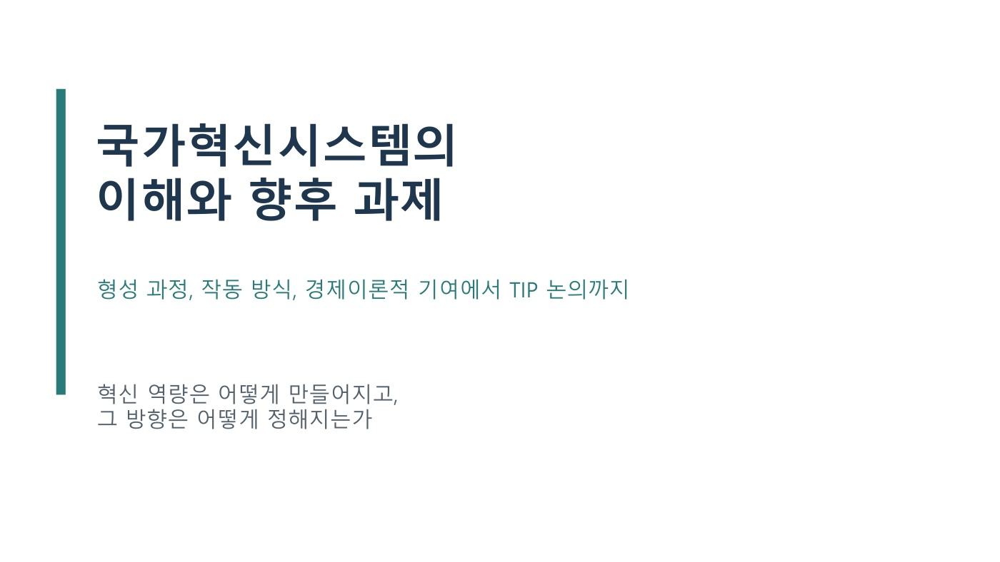
이 강의의 질문: "혁신 역량은 어떻게 만들어지고, 그 방향은 어떻게 정해지는가." 앞부분(형성·작동·이론적 기여)은 '어떻게 만들어지는가', 뒷부분(한계·TIP)은 '방향은 누가 정하는가'에 해당한다.
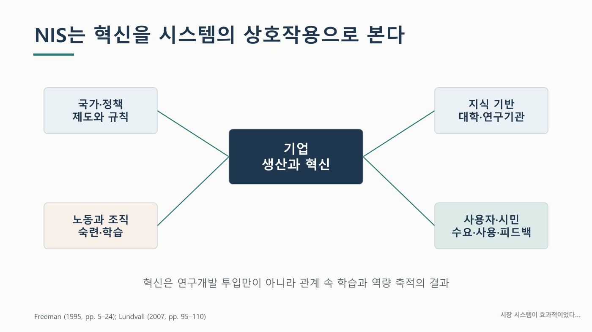
다섯 요소: 기업(생산과 혁신) — 국가·정책(제도와 규칙) / 지식 기반(대학·연구기관) / 노동과 조직(숙련·학습) / 사용자·시민(수요·사용·피드백)
1) 기업을 가운데 둔다 시험 포인트
기업을 딱 가운데 두고 있어. 근데 사람들은 기업을 가운데 두는 게 아니고 연구소를 두고 막 이렇게 해가지고 헷갈리는데, 그렇지 않고. 왜냐, 혁신을 만들어내는 것은 기업이라는 관점 속에서, 국가 정책·노동과 조직·대학·시장이 기업과의 관계 속에서 네트워크로 주고받으며 지식이 움직여진다는 얘기죠.
- 원래 혁신의 모습은 과학자가 "땡" 하고 발명해 오는 것이 아니라 기업이 시장으로 쭉 당기는 것이다.
- 대비: Triple Helix는 대학이 스스로 기업이 되는 모습을 그린다(W05-1/07). NIS의 중심은 대학이 아니라 기업이다.
보충시험 포인트퀴즈에서 헷갈리기 쉬운 지점. "국가"혁신시스템이라는 이름 때문에 정부나 국책연구소가 중심이라고 쓰기 쉽다. 그림의 중심은 기업이고, '국가'는 분석 단위(국경 안의 제도 묶음)를 가리킨다.
2) Hayek와의 연결 — 분산된 지식을 제도·네트워크로 조직한다 시험 포인트
- 사회 속 지식은 분산되어 있고(distributed knowledge), 그것을 잘 조직하는 가장 좋은 방법이 시장이라는 것이 Hayek였다(W03/11). NIS는 같은 문제의식을 시장만이 아니라 제도와 네트워크로 확장한다.
근데 지금 무슨 일이 벌어지고 있어요? AI가 지금 그걸 해버리고 있어. AI가 분산된 지식을 쫙 다 당기고 있어요. 무서운 세상이 되겠죠. 옛날엔 이걸 할 수 없다고 생각했는데.
보충Hayek는 분산된 지식을 한곳에 모을 수 없기 때문에 중앙계획이 실패한다고 했다. 교수님의 AI 발언은 그 전제가 흔들리고 있다는 문제 제기다. 토론거리로 남겨 둘 만하다.
3) 핵심은 정보의 흐름
(§4-4 결론) 개방성과 경쟁, 그리고 견제가 중요하다. Triple Helix든 NIS든 정보의 흐름이 핵심이고, 혁신은 한 사람의 머릿속에서 나오지 않는다.
가치가 어디서 발생하는지를 찾아낸 거예요. 그리고 그 플로우가 잘 흘러야 된다는 얘기를 하고. 그건 Smith나 Hayek와 별로 다르지 않습니다. 시장만 얘기했을 뿐이지, 제도와 구조 속에서 벌어지고 있다는 얘기를.
보충정리하면 NIS의 주장은 세 문장이다.
- 혁신의 주체는 기업이다.
- 기업은 혼자 혁신하지 않고 상호작용 속에서 학습한다.
- 그 상호작용이 얼마나 잘 흐르는지는 나라마다 다른 제도가 결정한다.
수업에서 나온 논점
- W05 Q3 토론(같은 날 전반부)에서 교수님은 "저는 개인적으로는 기업이 중요하다고 생각해요. 그리고 기업도 중요하지만 시장이 더 중요하다고 생각을 해요."라고 했다(, 수업노트 §1 Q3). 대학 중심의 Triple Helix보다 기업 중심의 NIS 쪽에 교수님의 무게가 실려 있다.
- 휴식 직후 K-pop·게임 사례()도 같은 맥락이다. 시장에 쓰는 사람이 붙어 있어야 한다 → W06/06.
보충 사례 보충
- 보충NIS가 정책 언어가 된 경위: OECD가 1990년대에 NIS를 공식 분석틀로 받아들이면서, 각국 정부가 R&D 예산 총액만이 아니라 산학연 연계·인력 이동·기술 확산 같은 연결 지표를 함께 보게 됐다. 한국 과학기술정책 문서에서도 'NIS'는 익숙한 용어가 됐다. 다만 교수님은 한국에서 NIS가 철학적 개념보다 도구적 프레임으로 수입됐다고 본다(W06/03).
- 보충반대 사례: R&D 투자 비중이 세계 최상위인데도 성과가 기대에 못 미친다는 "Korea R&D Paradox"(W01/04)는 NIS 관점에서 보면 투입은 많은데 연결이 약한 문제로 읽힌다.
수업 프레임에서의 위치
- W01/10 강의 지도에서 NIS는 "구조의 차이"에 주목하는 첫 번째 시스템 이론이다(NIS·SIS·SSIP·BizS). 이후 SIS(산업별 차이), TIS(기술별 변화)가 같은 '시스템' 관점을 다른 단위로 적용한다.
- W02-1의 미시적 기초(사용자–생산자 상호작용, STI/DUI)를 국가 단위로 쌓아 올린 것이 NIS다.
출처 · 태그
리딩
- Freeman (1995)
- Lundvall (2007)
수업노트
- 수업노트/W06_강의기록_261010.md §3-4
- 수업노트/W06_강의기록_261010.md §4-4
태그
예상 퀴즈 포인트
- NIS가 혁신을 바라보는 관점을 설명하라. 특히 NIS 도식에서 무엇이 중심에 놓이며 왜 그런지 서술하라. 서술형
- 비교형: NIS와 Triple Helix는 혁신의 중심 주체를 각각 어디에 두는가? 그 차이가 정책에 어떤 함의를 갖는가? 비교형
- NIS와 Hayek의 분산된 지식론은 어떤 문제의식을 공유하고, 무엇이 다른가? 서술형
NIS의 네 가지 질문과 수렴 vs 발산
Where / what supports / how diffused / why nations differ — convergence vs divergence
한 줄 정의
NIS는 혁신이 어디서 생기고, 무엇이 뒷받침하며, 어떻게 퍼지고, 왜 나라마다 다른가를 함께 묻는다. 그중 마지막 질문에서 나오는 쟁점이 수렴 vs 발산이다. 세계화 속에서 각국 시스템이 베스트 프랙티스로 닮아 가는가(수렴), 아니면 각자의 역사·제도대로 달라지는가(발산).
쉽게 말하면
교수님의 비유는 축구 전술이다. 스페인식 패스 축구가 잘되면 다들 따라 한다(수렴). 그러다 누군가 새 전술로 판을 깨면 다시 다들 그쪽으로 바뀐다. 보충그런데 같은 전술을 따라 해도 나라마다 선수 기질과 유소년 육성 방식이 달라서 결과는 똑같지 않다. 이것이 발산 쪽 논리다.
핵심 내용
슬라이드 (W06 p8)
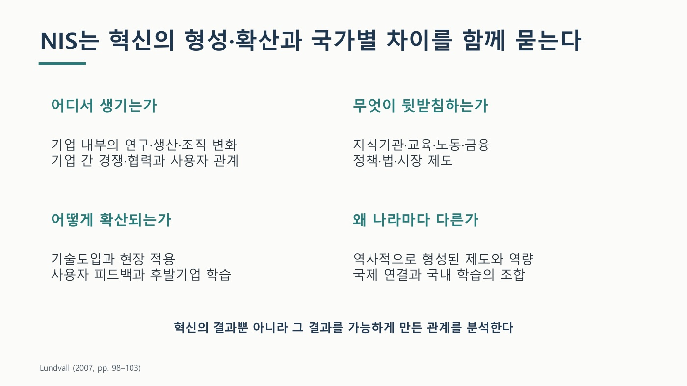
| 질문 | 보는 것 |
|---|---|
| 어디서 생기는가 | 기업 내부의 연구·생산·조직 변화 / 기업 간 경쟁·협력과 사용자 관계 |
| 무엇이 뒷받침하는가 | 지식기관·교육·노동·금융 / 정책·법·시장 제도 |
| 어떻게 확산되는가 | 기술 도입과 현장 적용 / 사용자 피드백과 후발기업 학습 |
| 왜 나라마다 다른가 | 역사적으로 형성된 제도와 역량 / 국제 연결과 국내 학습의 조합 |
"혁신의 결과뿐 아니라 그 결과를 가능하게 만든 관계를 분석한다."
1) NIS도 나라마다 다르다
- 시민 인식론이 나라마다 달랐듯(W05-2/04) NIS도 나라마다 다르다. 제조업의 위치, 일하는 방식(working practices)이 다르기 때문이다.
보충시험 포인트연결 포인트: W05-2에서 미국·영국·독일의 지식 검증 방식이 달랐다면, W06에서는 같은 나라들의 지식 생산·활용 방식이 다르다. "국가별 차이"라는 같은 질문을 공급 쪽(NIS)과 수요 쪽(시민 인식론)에서 각각 던진 셈이다.
2) 수렴이냐 발산이냐 시험 포인트
- 글로벌화로 경쟁하면 베스트 프랙티스를 따라 수렴할 가능성이 크다. 그때 가장 큰 힘을 발휘하는 것은 금융(finance) — 어디에 투자하느냐다.
- 그런데 지금은 수렴하다 말고 다들 벽을 치기 시작했다. (같은 날 Q3 토론의 자국 우선주의 논의와 이어진다.)
- 축구 비유: 잘되는 전술을 따라 하다가 누가 판을 깨면 다시 바뀐다 — 지배적 디자인(dominant design)과 같은 구조다(W01/05).
3) 추격의 순서
- 영국 산업혁명 → 첫 번째 추격국 독일(비스마르크 이후) → 미국 → 일본 → 한국 → 중국.
- 그래서 Freeman이 독일의 List를 인용한다(W06/03 계보).
보충추격의 역사가 곧 발산의 역사이기도 하다. 독일·일본·한국은 영국을 따라 했지만 영국과 똑같은 시스템을 만들지 않았다. 각자 자기 제도(독일의 직업교육, 일본의 계열, 한국의 재벌·정부 주도 금융)를 통해 추격했다.
수업에서 나온 논점
- Q3 토론(, 수업노트 §1)에서 교수님은 한국이 글로벌화로 가장 득을 본 나라이며, 그 배경은 자유 시장 경쟁이었다고 했다. "우리가 철벽을 쳤으면 우리는 그냥 안 돼요. 아담 스미스의 좋은 버전을 우리는 한 거예요." 벽을 칠 것인가, 같이 나갈 것인가가 세계사적으로 중요한 순간이라는 것. 수렴 vs 발산 논의의 현재형이다.
- W08(10/24) Q11 — "수렴할 때 큰 힘을 발휘하는 게 파이낸스"의 의미 (수업노트 W08 §1 Q11). 수렴은 "시장경제가 되면 다 미국식으로 갈 것"이라는 예상이다. 나라마다 생활 방식이 다른데 거기서 시장만 떼어 내면 평등한 계약 관계와 가격 신호만 남는다. 이 시스템은 영·미의 생활세계 방식에서 시작된 것이 추상화·세계화된 것이라 독일 등에는 안 맞을 수 있다. 그런데도 수렴을 밀어붙이는 힘이 파이낸스 — 돈이 들어가면 사람들은 돈을 따라 움직이기 때문.
새마을 시절이었다면 옆집 자전거포 김 씨 아저씨, 방앗간 박 씨 아저씨 — 돈만으로 해결되는 게 아니잖아요. 관계라는 게 있잖아요. 시장은 관계보다 돈이 먼저인 거죠.
- W08 Q2 — 브렉시트 같은 결정은 어떻게 번복하나: Karl Polanyi의 생활세계 논리 — 원래 시장 거래도 생활세계 속에서 움직였는데 시장이 생활세계에서 떨어져 나왔고, 그것이 세계화·신자유주의로 이어졌다. 비교우위론은 무역이 모두에게 좋다고 했지만 선진국 블루칼라에게 피해를 줬고, 제조업이 빠지면 기술 기반 사회 자체가 위험해질 수 있다는 점을 간과했다. 브렉시트 지지층에게는 생활세계의 회복이라는 의미가 있었다.
그냥 돈만 많이 벌고 이런 개념이 아니고 내 생활이 중요한 거예요. 내 생활을 국가 시스템이 어떻게 챙겨줄 것이냐. 유럽이 거기서 복지국가가 진도를 더 나갔어야 되는데, 복지국가의 시스템 혁신이 안 일어났던 거죠.
- W08 Q10 — 뒤처지는 국가도 분석해야 하지 않나: 해야 하는데 사람들이 왜 뒤처졌는지 이야기를 안 하려 한다. 혁신학의 인사이트는 "세상은 계속 변한다" — 누군가 딴짓을 하는 놈이 있기 때문. 패권국은 변하지 않으면 무너진다.
비즈니스 오퍼튜니티가 아니고 삶의 방식에 대해서 문제 제기를 하는 사람들이 있단 말이에요. 그런 사람들이 있기 때문에 세상은 변한다. 그 변할 때 수단으로서 사이언스 테크놀로지가 굉장히 중요한 역할을 합니다.
보충 사례 보충
- 보충자본주의 다양성(Varieties of Capitalism, Hall & Soskice 2001): 미국·영국형 자유시장경제(LME)와 독일·일본형 조정시장경제(CME)가 세계화 속에서도 수렴하지 않고 각자의 강점(급진적 혁신 vs 점진적 혁신)을 유지한다는 주장. 발산론의 대표 논거다. 이 수업 계획표의 SSIP(혁신과 생산의 사회시스템) 주제와 이어진다.
수업 프레임에서의 위치
- '왜 나라마다 다른가'는 W01/10 강의 지도의 "구조의 차이" 축 그 자체다.
- 국경을 넘는 연결은 이후 GIS(글로벌혁신시스템) 주제에서 본격적으로 다룬다.
출처 · 태그
리딩
- Lundvall (2007)
수업노트
- 수업노트/W06_강의기록_261010.md §3-5
- 수업노트/W08_강의기록_261024.md §1 Q2, Q10, Q11 — 생활세계·뒤처지는 국가·파이낸스와 수렴
태그
예상 퀴즈 포인트
- NIS가 던지는 네 가지 질문을 쓰고, "왜 나라마다 다른가"에 대한 NIS의 답을 설명하라. 서술형
- 세계화 속에서 각국 혁신시스템은 수렴하는가 발산하는가? 수업에서 나온 근거(금융, 자국 우선주의, 지배적 디자인 비유)를 들어 논하라. 서술형
- 비교형: W05-2의 국가별 시민 인식론 차이와 W06의 국가별 NIS 차이는 각각 무엇을 비교하는가? 비교형
NIS의 계보 — List에서 Freeman·Lundvall까지
Genealogy of NIS — List, Freeman, Lundvall, Nelson/OECD, Godin
한 줄 정의
NIS라는 말은 1980년대 Freeman이 만들었지만, 그 생각의 뿌리는 1841년 Friedrich List의 "후발국은 국가가 산업과 학습을 키워야 추격할 수 있다"는 주장에 있다. 이후 Lundvall이 사용자–생산자 상호작용으로 미시적 기초를 놓았고, 1990년대에 Nelson의 국가 비교와 OECD를 거쳐 정책 언어로 퍼졌다.
쉽게 말하면 보충
족보로 보면 이렇다. 할아버지 List가 "우리 집안은 남의 집 따라잡으려면 집안 전체가 나서야 한다"는 가훈을 남겼고, 아버지 Freeman이 그걸 "국가혁신시스템"이라는 이름으로 문서화했다. 작은아버지 Lundvall은 "집안이 잘되는 건 결국 식구들끼리 얼마나 말을 주고받느냐에 달렸다"고 집안 내부의 작동 원리를 밝혔다. 다만 슬라이드가 못 박듯 List는 개념의 선구이지 'NIS'라는 이름을 지은 사람은 아니다.
핵심 내용
슬라이드 (W06 p9)
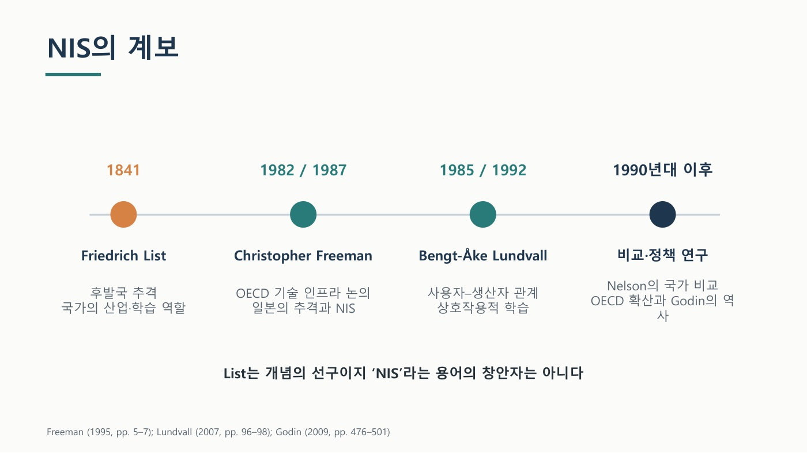
| 시기 | 인물 | 기여 |
|---|---|---|
| 1841 | Friedrich List | The National System of Political Economy. 후발국 추격에서 국가의 산업·학습 역할. 개념의 선구 |
| 1982 / 1987 | Christopher Freeman | OECD 기술 인프라 논의 / 일본의 추격과 NIS |
| 1985 / 1992 | Bengt-Åke Lundvall | 사용자–생산자 관계, 상호작용적 학습 |
| 1990년대 이후 | Nelson, OECD, Godin | 국가 비교 연구, OECD 확산, Godin의 역사적 검토 |
시험 포인트"List는 개념의 선구이지 'NIS'라는 용어의 창안자는 아니다."
1) Freeman — 용어를 만든 사람 시험 포인트
- 영국 케임브리지에서 경제학을 공부했고 'National Innovation System'이라는 말을 만든(coining) 사람이다. SPRU(Science Policy Research Unit)를 세웠다.
- Lundvall은 Freeman의 후배이며 둘은 사이좋게 이 개념을 함께 발전시켰다.
- 출발점: 1980년대 초 OECD 과학기술·혁신 워킹그룹에 Freeman이 참여해 '기술 인프라(technological infrastructure)' 보고서를 쓰려 했다. 그런데 OECD 내부에서 "너무 국가가 나서는 것 아니냐"는 반발(기업 vs 국가 논쟁)이 있어 공식 발표되지 못했다. 그 내용이 나중에 1995년 논문에 담긴다.
- 1987년 Technology Policy and Economic Performance: Lessons from Japan — 일본은 왜 잘 나가는가, 그 비결로 국가 시스템, 네트워크를 제시했다.
- Freeman 위로는 The Social Function of Science(보충J.D. Bernal, 1939)를 쓴 케임브리지 과학자 전통이 있다.
보충Freeman의 1982년 OECD 원고는 "Technological infrastructure and international competitiveness"라는 제목으로, 한참 뒤인 2004년에 학술지(Industrial and Corporate Change)에 정식 게재됐다.
2) Lundvall과 1988년 Dosi et al.
- 1988년 Dosi et al. Technical Change and Economic Theory: 당대 혁신 연구자들이 마르크스주의자까지 다 모여 쓴 책. 이 책에서 Freeman은 기술경제패러다임(W03/02)을, Lundvall은 사용자–생산자 관계의 상호작용 학습(interactive learning) 장을 썼다.
보충같은 책에 W03의 TEP와 W02-1의 사용자–생산자 상호작용이 나란히 실렸다는 점이 흥미롭다. 거시(패러다임)와 미시(상호작용) 두 층위가 NIS로 합쳐지는 출발점이다 → W06/04.
3) Godin — 역사적 검토
- Godin(캐나다 학자)은 과학기술 개념사를 역사학적으로 꾸준히 추적해 온 사람이다. NIS 개념이 어떻게 형성·확산됐는지를 검토했다(Godin 2009).
4) 한국에서의 NIS 시험 포인트
- 김인수 교수님의 Imitation to Innovation(모방을 통한 혁신 — learning by doing, 역량 축적, 흡수 역량)이 기업 레벨 연구를 아주 초기에 해 큰 기여를 했다.
- 한국에서는 NIS가 철학적 개념보다 "급하니까 산업화하려면 어떻게 해야 하나"라는 도구적 프레임으로 수입됐다.
보충시험 포인트이 대목은 W02-1/09(후발국의 역방향 기술 궤적)와 직결된다. 김인수의 모방 → 혁신 경로가 바로 그 역방향 궤적이다.
수업에서 나온 논점
- 추격의 순서(영국 → 독일 → 미국 → 일본 → 한국 → 중국)를 설명하며, 첫 추격국이 독일이었기 때문에 Freeman이 독일의 List를 인용한다고 했다(수업노트 §3-5). 계보의 출발점이 왜 List인지에 대한 교수님의 설명이다.
보충 사례 보충
- 보충List의 '사다리 걷어차기': List는 영국이 자유무역을 설교하면서도 자신은 보호무역으로 성장했다고 비판했다. 후발국 독일에는 유치산업 보호와 국가의 교육·인프라 투자가 필요하다는 주장이다. 장하준의 Kicking Away the Ladder(2002)가 이 논리를 현대에 되살렸다.
- 보충Nelson (1993) National Innovation Systems: A Comparative Analysis: 15개국 NIS를 나란히 비교한 책. 슬라이드의 "Nelson의 국가 비교"가 이것이다.
수업 프레임에서의 위치
- W01/09 혁신시스템 접근법의 계보에서 NIS는 Innovation Studies 계열의 출발점이다. SIS·TIS·StS가 모두 이 '시스템' 관점에서 갈라져 나온다.
- 계보 마지막의 Lundvall은 2024년 Transformative Innovation Policy로 자기 프레임을 다시 확장한다 → W06/12.
출처 · 태그
리딩
- Freeman (1995)
- Lundvall (2007)
- Godin (2009)
- List (1841)
- Freeman (1987)
수업노트
- 수업노트/W06_강의기록_261010.md §3-1, §3-2
태그
예상 퀴즈 포인트
- NIS 개념의 계보를 List–Freeman–Lundvall 순으로 설명하고, 각자의 기여를 한 문장씩 쓰라. 서술형
- "List는 NIS의 선구이지만 용어의 창안자는 아니다"는 말의 의미를 설명하라. 서술형
- 한국에서 NIS가 '도구적 프레임'으로 수입됐다는 교수님의 평가는 무슨 뜻인가? 서술형
Freeman vs Lundvall — 서로 다른 층위의 출발
Freeman (macro, national competitiveness) vs Lundvall (micro, user–producer interaction)
한 줄 정의
NIS의 두 창시자는 출발점이 반대다. Freeman은 "왜 어떤 나라는 잘 따라잡고 어떤 나라는 못 하나"라는 국가 간 경쟁력 차이(매크로)에서 출발해 국가 제도로 내려갔다. Lundvall은 "기업과 사용자가 어떻게 서로 배우나"라는 생산 현장의 상호작용(마이크로)에서 출발해 국가 시스템으로 올라갔다.
쉽게 말하면 보충
한 학교가 왜 공부를 잘하는지 알아보는 두 연구자가 있다.
- Freeman은 교육청 자료부터 본다. 예산, 교사 수, 커리큘럼, 다른 학교와의 성적 비교. 위에서 아래로.
- Lundvall은 교실에 들어가 본다. 학생이 질문하고 선생님이 답하고, 친구끼리 가르쳐 주는 장면. 그 장면이 학년 전체, 학교 전체로 이어지는 걸 따라 아래에서 위로.
둘 다 결국 "학교 시스템"을 그리지만 출발한 곳이 다르다.
핵심 내용
슬라이드 (W06 p10)
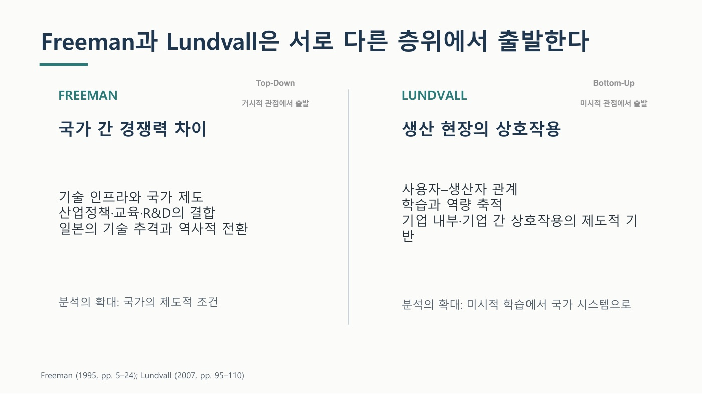
| Freeman | Lundvall | |
|---|---|---|
| 출발 | 국가 간 경쟁력 차이 | 생산 현장의 상호작용 |
| 초점 | 기술 인프라와 국가 제도 / 산업정책·교육·R&D의 결합 | 사용자–생산자 관계 / 학습과 역량 축적 |
| 사례·대상 | 일본의 기술 추격과 역사적 전환 | 기업 내부·기업 간 상호작용의 제도적 기반 |
| 분석의 확대 | → 국가의 제도적 조건 | 미시적 학습 → 국가 시스템 |
1) 매크로 vs 마이크로 시험 포인트
Freeman은 좀 국가 차원, 매크로한 차원에서 얘기를 더 했다면, Lundvall은 제가 저번에 얘기했지만 마이크로 파운데이션, 프로듀서–유저 릴레이션십 러닝, 이 얘기를 처음으로 이론적으로 만드신 분이에요. 프로듀서–유저 관계가 이쪽으로도 늘어나고 저쪽으로도 늘어나면 전체 시스템이 만들어지는 거죠. 혼자서 만드는 게 아니라 인터랙션을 통해서.
- Lundvall의 이 작업에서 학습경제(learning economy)·지식경제 같은 말이 나왔다.
- 시험 포인트사용자–생산자 관계를 통한 학습은 혁신학을 다른 학문과 구별시키는 강한 마이크로 파운데이션이며, 다른 분야에서는 이런 이야기를 하지 않는다.
보충"저번에 얘기했지만" = W02-1/07. 9/12 수업의 사용자–생산자 상호작용·조직화된 시장이 바로 Lundvall의 미시적 기초다. W06은 그것이 국가 단위로 쌓이면 NIS가 된다는 이야기다.
2) Lundvall의 시스템: 기업에서 시작해 제도로 (W06 p12)
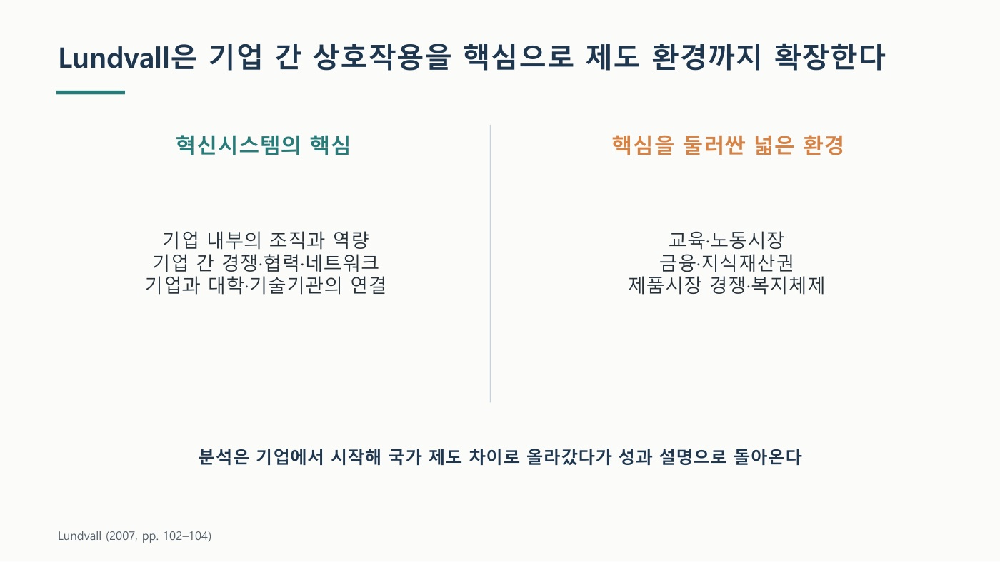
- 핵심: 기업 내부의 조직과 역량 / 기업 간 경쟁·협력·네트워크 / 기업과 대학·기술기관의 연결
- 넓은 환경: 교육·노동시장 / 금융·지식재산권 / 제품시장 경쟁·복지체제
- "분석은 기업에서 시작해 국가 제도 차이로 올라갔다가 성과 설명으로 돌아온다."
Lundvall은 굉장히 기업 중심적이지만 신자유주의자는 아니다. 복지 시스템과 국가 개입을 중요하게 보는 사람이다. 핵심은 새로운 가치가 어디서 발생하는가를 딱 짚었다는 것.
보충시험 포인트함정 포인트: "기업 중심 = 시장주의"가 아니다. Lundvall의 넓은 환경에 복지체제가 들어 있다. 덴마크 출신답게 노동자의 학습 역량을 지켜 주는 사회안전망을 혁신 조건으로 본다(보충덴마크 유연안정성 flexicurity와 연결되는 대목).
3) 두 출발의 장단점 보충
| Freeman (위에서) | Lundvall (아래에서) | |
|---|---|---|
| 잘 보이는 것 | 산업정책·국가 전략·추격의 역사 | 현장의 학습·암묵지·상호작용 |
| 놓치기 쉬운 것 | 현장 학습이 실제로 어떻게 일어나는지 | 국가 간 권력·국제 경쟁 구도 |
| 수업 연결 | W03 TEP(장기파동), W06/05 기술 인프라 | W02-1 STI/DUI, 사용자–생산자, W06/07 |
보충두 사람의 차이는 대립이 아니라 분업에 가깝다. 교수님도 둘이 "사이좋게" 개념을 발전시켰다고 했다.
수업에서 나온 논점
- 한국 vs 라틴아메리카 비교(§4-4)에서 교수님은 Lundvall의 사용자–생산자 상호작용을 국가 차원에 그대로 적용했다. "정부가, 군대가 유저가 되는 거예요." 마이크로 개념이 매크로 설명에 쓰이는 예 → W06/06.
보충 사례 보충
- 보충Freeman의 일본 연구: 통상산업성(MITI)의 장기 비전, 기업 내 R&D와 생산 현장의 긴밀한 연결, 역설계를 통한 도입 기술 개선, 대기업 계열 간 협력을 일본 추격의 비결로 꼽았다. "기술 하나"가 아니라 이것들이 맞물린 묶음이 핵심이라는 것 → W06/05.
- 보충Lundvall (1992) National Systems of Innovation: Towards a Theory of Innovation and Interactive Learning: 부제에 'interactive learning'이 들어간 책. 상호작용 학습을 국가 시스템 이론의 중심에 놓았다.
수업 프레임에서의 위치
- W02-1(미시적 기초) → W03(거시적 속성) → W06(NIS)의 흐름에서, 두 층위가 처음으로 한 이론 안에서 만나는 지점이다.
- 매크로–마이크로 대비는 이후 SIS·TIS를 볼 때도 "이 이론은 어느 층위에서 출발했나"를 묻는 기준이 된다.
출처 · 태그
리딩
- Freeman (1995)
- Lundvall (2007)
수업노트
- 수업노트/W06_강의기록_261010.md §3-3
- 수업노트/W06_강의기록_261010.md §4-3
태그
예상 퀴즈 포인트
- Freeman과 Lundvall의 NIS 접근을 출발점·초점·분석의 확대 방향으로 비교하라. 비교형
- "사용자–생산자 관계를 통한 학습은 혁신학의 강한 마이크로 파운데이션"이라는 교수님의 말을 W02-1 내용과 연결해 설명하라. 서술형
- Lundvall은 기업 중심적이지만 신자유주의자가 아니라는 말은 무슨 뜻인가? (p12의 '넓은 환경' 요소를 근거로) 서술형
Freeman의 기술 인프라 — 액터가 아니라 네트워크
Technological infrastructure as a bundle of connected national capabilities
한 줄 정의
Freeman이 말한 기술 인프라는 연구소 건물 같은 시설 하나가 아니라, 인력·기업 학습·지식 기관·정책 조정·시장 피드백이 서로 맞물려 돌아가는 역량과 제도의 묶음이다. 교수님의 요약: "기본은 네트워크야. 액터가 아니라 네트워크."
쉽게 말하면
교수님이 든 그림 그대로다. 지역에 가 보면 "다 있어. 시설도 있고 다 있어. 쓰질 않아." 보충헬스장 회원권, 운동 기구, 트레이너가 다 있는데 운동하는 습관과 같이 가는 친구가 없으면 근육이 안 붙는 것과 같다. 기구(액터)가 아니라 기구를 쓰게 만드는 관계(네트워크)가 역량을 만든다.
핵심 내용
슬라이드 (W06 p11)
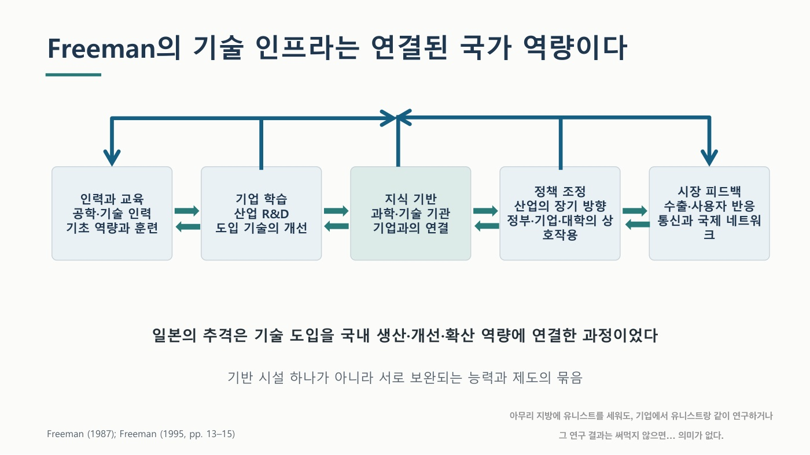
| 요소 | 내용 |
|---|---|
| 인력과 교육 | 공학·기술 인력, 기초 역량과 훈련 |
| 기업 학습 | 산업 R&D, 도입 기술의 개선 |
| 지식 기반 | 과학·기술 기관, 기업과의 연결 |
| 정책 조정 | 산업의 장기 방향, 정부·기업·대학의 상호작용 |
| 시장 피드백 | 수출·사용자 반응, 통신과 국제 네트워크 |
"일본의 추격은 기술 도입을 국내 생산·개선·확산 역량에 연결한 과정이었다." / "기반 시설 하나가 아니라 서로 보완되는 능력과 제도의 묶음"
네트워크 = 행위자(actor) + 연결(connection) + 그것을 쌓는 제도(institution).
1) 액터만 만들어 놓은 문제 시험 포인트
현실적으로 어떻게 쓰이냐 하면, 후발국에 가면 지식 기반이 없어. 세워야지. 그래서 카이스트 만들고 베트남 카이스트도 만들고 태국 카이스트도 만들고 추진을 하는 거지. 근데 그렇게 만들어 놓는다고 되는 게 아니잖아요. 기본은 네트워크야. 액터가 아니라 네트워크. 지역에 가면 다 있어. 시설도 있고 다 있어. 쓰질 않아. 그러니까 액터들만 다 만들어 놓은 거예요.
- 지역 대학이 콧대를 높이면 지역 기업은 "서울대랑 얘기하면 되지" 하고 돌아선다. UNIST만 세워 놓는다고 되는 게 아니다.
2) 그래서 지역마다 다를 수밖에 없다 시험 포인트
- 중앙에서 다 거버닝할 수는 없다. 그 지역 사람들이 조찬 모임을 하든 지역 대학 동문회를 쓰든 그 지역에 맞는 네트워크 작동 방식이 있다.
- 이것은 시장의 거래로만 설명될 수 없다.
보충시험 포인트W03/17의 "거버넌스는 국지적이어야 한다(부산은 부산 단위로)"와 같은 주장이다. W03에서는 Hayek·Ostrom 논리로, W06에서는 Freeman의 네트워크 논리로 같은 결론에 도착한다.
3) 한국의 네트워크는 왜 작동했나 — 임베디드된 교육열
식민지를 딱 지나고 나서 봤더니 갑자기 중등교육 진학률이 미친 듯이 올라간다. 다른 나라 사람들이 봤을 때는 '얘들 왜 이러지?' 인류 역사상 별로 볼 일이 없던 거예요. 한국이나 중국은 당연한 건데. 그게 우리의 시스템 안에 임베디드 돼 있었던 거예요. 식민지 시기를 거치며 안 되다가 해방 이후 발현이 된 거죠.
- 과거제 전통에서 공부는 곧 신분 상승이었다. (같은 날 Q1 토론의 송나라 성리학·과거제·메리토크라시 이야기와 이어진다.)
- 일본도 전쟁에 졌지만 조직된 것이 있어 바로 추격에 나섰다. 그런데 왜 업그레이드가 안 됐나 — 계속 영주 시스템에 머물렀고, 정부와 밀착해 은퇴 관료가 회사로 가서 뭉개는 구조가 됐다. 한국은 재벌 개혁 논쟁이라도 했다.
보충일본 사례는 W01/05 조직 고착과 W03/03 "일본은 업그레이드(동심원형 혁신)에 실패했다"와 연결된다. 추격을 잘하게 만든 네트워크가 나중에는 바뀌지 못하게 붙잡는 고착이 된 것이다.
수업에서 나온 논점
- 수업노트에 토론 질문 후보로 표시됨: "액터는 다 있는데 네트워크가 작동하지 않는 지역혁신의 문제를 NIS로 어떻게 설명할 것인가."
- Term paper 후보로 표시됨: UNIST–울산 기업 간 네트워크 작동 여부 케이스.
- Q1 토론()의 결론 "개방성을 얼마나 가지고 있느냐가 판단 기준"도 같은 문제다. 네트워크는 새 아이디어에 열려 있어야 작동한다.
- W08(10/24) Q1 — 일본의 NIS는 왜 효과가 떨어졌나 (수업노트 W08 §1 Q1). 교수님의 네 요인:
- 젊은 세대가 예전처럼 일하지 않는다 — 패전에 대한 반작용으로 이뤄진 국민 동원(mobilization)이 더 이상 작동하지 않는다.
- 배태된 자율성이 무너졌다 — 은퇴 공무원이 기업으로 낙하산을 타며 이권화되었다.
- 한국은 IMF가 판을 깼다 — 대마불사가 사라지며 네이버 같은 테크 기업이 등장했고 내부 경쟁이 다시 살아났다.
- 일본은 강한 생활세계 시민사회를 가졌지만 계급이 남아 있다 — 지역 공동체는 강하지만 공적 공간에는 덜 신경 쓴다. 일본의 새로움은 아마 그 생활세계에서 나올 것.
공무원들이 낙하산으로 다 기업으로 들어간 거예요. 은퇴하고서. 그러면서 이게 이권이 돼버렸어요. 새로운 발전을 하고 경쟁을 하는 게 아니고 타협하는 식으로 넘어가기 시작했어요.
- 대만은 가족 중심 경영 + 미국 시장 납품 구조로 동력을 얻었고, 중국은 디지털 개발국가로 거대 내수가 끌었지만 개방이 안 된 것이 문제.
- 보충위 본문의 "은퇴 관료가 회사로 가서 뭉개는 구조"를 W08에서 배태된 자율성(embedded autonomy)의 붕괴로 다시 설명했다 → W06/06의 embedded autonomy와 짝.
보충 사례 보충
- 보충테크노파크·혁신도시: 전국 각지에 산업단지·연구시설이 들어섰지만 입주 기관끼리 교류가 적다는 평가가 반복된다. 교수님이 말한 "액터만 만들어 놓은" 전형적 장면이다.
- 보충ANT와의 연결: W03/05의 기술경제적 네트워크(Callon)도 "행위자 목록이 아니라 연결이 만들어지는 과정"을 봤다. Freeman은 경제학, Callon은 사회학에서 출발했지만 네트워크가 단위라는 직관은 같다.
수업 프레임에서의 위치
- NIS를 실무에 쓸 때 가장 흔한 오해(기관을 세우면 시스템이 생긴다)를 바로잡는 개념이다.
- 같은 '연결된 역량' 관점이 W02-1/08 생산 능력 vs 기술 역량(사 올 수 있는 것 vs 학습으로만 쌓이는 것)의 국가판이다.
출처 · 태그
리딩
- Freeman (1987)
- Freeman (1995)
수업노트
- 수업노트/W06_강의기록_261010.md §4-1
- 수업노트/W06_강의기록_261010.md §4-2
- 수업노트/W08_강의기록_261024.md §1 Q1 — 일본 NIS는 왜 효과가 떨어졌나
태그
예상 퀴즈 포인트
- Freeman의 '기술 인프라'는 무엇인가? "기반 시설 하나가 아니라 서로 보완되는 능력과 제도의 묶음"이라는 말을 중심으로 설명하라. 서술형
- "액터가 아니라 네트워크"라는 교수님의 말을 지역혁신(대학·연구시설은 있는데 쓰이지 않는 문제) 사례로 설명하라. 서술형
- 일본이 추격에는 성공했지만 업그레이드에 실패한 이유를 NIS와 고착 개념으로 설명하라. 서술형
정부가 사용자가 되다 — 한국 vs 라틴아메리카
State as demanding user; competition and discipline vs import substitution
한 줄 정의
비슷한 출발선에서 한국은 성공하고 라틴아메리카는 막힌 이유를 교수님은 사용자–생산자 상호작용으로 설명한다. 한국은 정부(와 군대)가 까다로운 사용자 역할을 하며 기업을 세계 시장에서 경쟁시키고 실적으로 규율했다. 라틴아메리카는 큰 내수 시장 덕에 정부 눈만 맞추면 되는 수입대체 구조였다.
쉽게 말하면 보충
두 부모가 있다.
- 한국 부모: 학원비는 대주지만 "전국 대회에서 성적 못 내면 지원 끊는다". 아이는 밖에서 경쟁하며 실력을 키운다.
- 라틴아메리카 부모: 집이 넓고 형제가 많아 집 안에서만 1등 하면 된다. 바깥 대회는 안 나가도 된다.
둘 다 지원은 했다. 차이는 누가 성적을 매기느냐였다.
핵심 내용
1) 같은 출발, 다른 결과 시험 포인트
- 당시 라틴아메리카와 한국은 비슷했고 오히려 라틴아메리카 시장이 더 컸다.
- 그런데 한국은 기업들을 경쟁시켰다. 자본이 없으니 국가가 은행을 쥐고 펀딩하되, 세계 시장에서 성과를 못 내면 끝.
- 중국도 국내에서 싸움을 붙이지만, 국내 시장이 워낙 커서 해외에 안 나가도 된다. 대신 낭비(waste)가 엄청나다(공유자전거 쓰레기).
그게 아까 얘기했던, 기본적인 게 유저–프로듀서 인터랙션이에요. 정부가, 군대가 유저가 되는 거예요. 그럼 프로듀서랑 붙어서 계속 얘기를 해. 근데 러시아·라틴아메리카는 정부 눈만 맞추면 되잖아. 걔네들은 시장이 크니까 경쟁을 안 한 거예요. 수입대체를 시행하는 바람에. 우리는 경쟁을 시키고 디서플린(discipline)을 시킨 거예요. 그걸 embedded autonomy처럼 얘기했지만.
- 물론 부패가 없었던 것은 아니다. 그래도 대체로 실적으로 규율했다.
- 결론: 개방성과 경쟁, 그리고 견제가 중요하다.
보충시험 포인트포인트는 "정부 지원이 있었냐"가 아니다. 둘 다 정부가 지원했다. 차이는 지원의 조건이었다.
- 한국: 정부는 요구가 까다로운 사용자 → 생산자(기업)와 계속 대화하며 학습 → 바깥 시장의 성적표가 기준.
- 라틴아메리카: 정부는 보호자 → 기업이 정부와의 관계만 관리 → 학습 압력 없음.
2) 같은 원리로 본 K-콘텐츠 — 쓰는 사람이 붙어 있어야 시험 포인트
같은 날 휴식 직후(수업노트 §2-2) 교수님은 반대 방향의 사례를 들었다.
- 최근 자문 자리에서 보니, 국가가 20년 가까이 투자해 온 성장동력(로봇·바이오·소재)보다 국가가 별로 신경 쓰지 않은 식품·화장품·K-pop·게임이 오히려 더 크게 해외로 나가 있다.
왜 그랬을까. 제가 봤을 때는 유저 커뮤니티가 거기에 다 붙어 있어요. 시장이 다 붙어 있어요. 시장에 쓰는 사람이 다 붙어 있어야 돼.
- 사례: 하이브·JYP·SM·YG 4사가 함께 여는 행사에서 팬덤에게 상을 주는 부문을 만든다고 한다.
유저 생태계와 같이 커나간다는 거, 그 포착을 잘한다는 게 새로운 비즈니스지. 교과서에 있어서 따라 한 게 아니란 말이에요. 그냥 한 거예요. 시장에서. BTS가 그게 될 줄 누가 알았어. 아무도 몰랐어.
보충시험 포인트두 사례를 나란히 놓으면 교수님의 메시지가 선명해진다.
- 과거 추격기: 정부가 사용자 역할을 대신했다.
- 지금: 정부가 고른 분야보다 실제 사용자 커뮤니티가 붙은 분야가 잘된다.
- 공통 원리: 사용자–생산자 상호작용이 학습을 만든다. 그 사용자가 정부냐 팬덤이냐가 달라졌을 뿐이다.
- "BTS가 될 줄 아무도 몰랐다"는 W03/11 Hayek의 "모르기 때문에 경쟁한다"와 같은 말이다.
수업에서 나온 논점
- Q3 토론(, 수업노트 §1): "한민족 5천 년 역사가 이렇게 잘 나갔던 적이 없어요. 그런데 이렇게 잘 나가게 된 배경은 자유 시장 경쟁을 했기 때문이에요. 우리가 철벽을 쳤으면 우리는 그냥 안 돼요. 아담 스미스의 좋은 버전을 우리는 한 거예요." — 시장 크기가 생산성을 정한다는 Smith(W03/10)를 한국 성장에 적용.
- 휴식 직후의 한글 사례(수업노트 §2-1)도 같은 논리다. 쓰는 사람(양반가 여성)이 있었기 때문에 한글이 살아남았다 → W05-2/02 공동생산.
- 수업노트 토론 질문 후보: "국가가 지정한 성장동력 vs 유저 커뮤니티가 붙은 산업 — NIS의 기업 중심 그림이 K-콘텐츠를 설명하는가."
- Term paper 후보로 표시됨: K-pop·게임·화장품처럼 유저 커뮤니티가 붙은 산업 vs 국가 지정 성장동력 비교.
보충 사례 보충
- 보충Amsden (1989) Asia's Next Giant: 한국 정부는 보조금을 주는 대신 수출 실적 같은 성과 기준(reciprocity)을 요구했다고 분석했다. 교수님이 말한 "디서플린"과 같은 이야기다.
- 보충Evans (1995) Embedded Autonomy: 관료가 기업과 긴밀히 연결돼 있으면서도(embedded) 특정 기업에 포획되지 않는(autonomy) 상태가 발전국가 성공의 조건이라고 봤다. 교수님이 언급한 embedded autonomy가 이것이다.
- 보충수입대체 산업화(ISI): 1950~70년대 라틴아메리카는 수입을 막고 국내 생산으로 대체하는 전략을 썼다. 보호된 내수 시장 안에서 경쟁 압력이 약해 생산성 개선이 더뎠다는 평가가 많다.
- 보충방산 조달: 국방 조달은 '정부가 사용자'인 대표 사례다. W02-1/11의 공공조달·국산화 목표(demand-pull)와 같은 메커니즘이다.
수업 프레임에서의 위치
- W02-1의 수요 쪽 정책(W02-1/10 수요–공급–연계, W02-1/11 민간 R&D 수요 창출 4대 동인)을 국가 비교로 확장한 사례다. 수업노트 정제 노트도 이 대목을 W02(Kim & Dahlman, Evans)와 같은 이야기로 표시했다.
- 이 수업 계획표 후반의 개발국가(Developmental State) 주제로 이어질 논점이다.
출처 · 태그
수업노트
- 수업노트/W06_강의기록_261010.md §4-4
- 수업노트/W06_강의기록_261010.md §2-2
- 수업노트/W06_강의기록_261010.md §1 Q3
태그
예상 퀴즈 포인트
- 한국과 라틴아메리카의 추격 결과가 달랐던 이유를 사용자–생산자 상호작용 관점에서 설명하라. ("정부가 사용자가 되었다"의 의미 포함) 서술형
- 국가가 지정한 성장동력보다 K-pop·게임·화장품이 더 크게 성장한 이유에 대한 교수님의 설명을 쓰고, 그것이 NIS의 어떤 원리와 연결되는지 논하라. 서술형
- 정부 지원 자체가 아니라 '지원의 조건'이 중요했다는 주장을 경쟁·규율(discipline) 개념으로 설명하라. 서술형
NIS 안의 STI·DUI 결합 — 지식이 역량이 되는 경로
STI and DUI within NIS; from interaction to accumulated capabilities
한 줄 정의
NIS 안에서 혁신은 과학 기반 학습(STI)과 경험 기반 학습(DUI)이 함께 작동해 일어난다. 현장에서 문제를 발견하고, 사용자·공급자·연구자와 주고받으며, 명시지와 암묵지를 공유·실험하고, 개선을 확산하는 과정을 거쳐 지식이 축적된 역량이 된다.
쉽게 말하면 보충
요리를 배우는 두 길이 있다. 레시피 책과 영양학(STI), 그리고 주방에서 직접 해 보고 손님 반응 듣기(DUI). 잘하는 식당은 둘 중 하나가 아니라 둘을 섞는 비율을 자기 메뉴에 맞게 정한다. 그리고 그렇게 쌓인 손맛은 레시피만 복사해 간다고 따라 할 수 없다.
핵심 내용
슬라이드 (W06 p13–14)
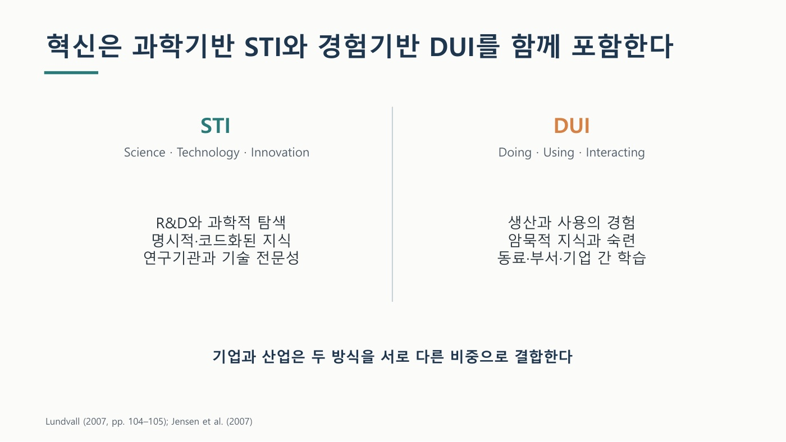
| STI (Science · Technology · Innovation) | DUI (Doing · Using · Interacting) | |
|---|---|---|
| 학습 방식 | R&D와 과학적 탐색 | 생산과 사용의 경험 |
| 지식 형태 | 명시적·코드화된 지식 | 암묵적 지식과 숙련 |
| 장소 | 연구기관과 기술 전문성 | 동료·부서·기업 간 학습 |
"기업과 산업은 두 방식을 서로 다른 비중으로 결합한다."
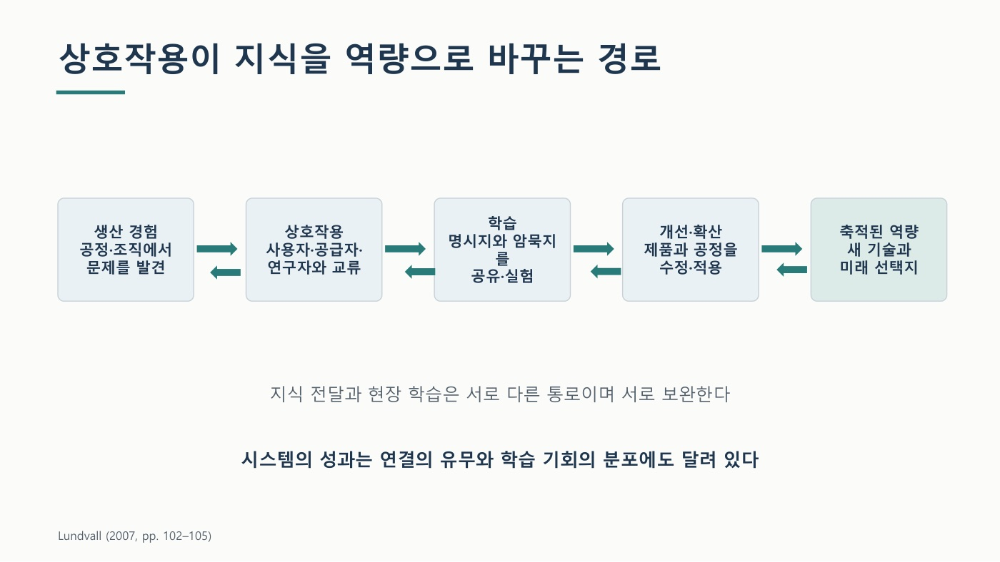
경로: 생산 경험(공정·조직에서 문제 발견) → 상호작용(사용자·공급자·연구자와 교류) → 학습(명시지와 암묵지를 공유·실험) → 개선·확산(제품과 공정을 수정·적용) → 축적된 역량(새 기술과 미래 선택지)
"지식 전달과 현장 학습은 서로 다른 통로이며 서로 보완한다." / "시스템의 성과는 연결의 유무와 학습 기회의 분포에도 달려 있다."
1) W02의 프레임이 NIS 안으로 들어온다
- W02에서 다룬 STI(과학 기반)와 DUI(경험 기반)가 NIS 안에서 함께 작동한다.
보충W02-1/03·04에서 Jensen et al.(2007)이 결합 모드 기업이 가장 혁신을 잘한다는 걸 보였다. W06은 그 결합이 기업 안에서만이 아니라 국가 시스템 차원에서 일어난다고 본다. 즉 STI를 맡는 대학·연구소와 DUI가 일어나는 현장이 연결돼 있는지가 국가 성과를 가른다.
2) 피지컬 AI도 결국 암묵지를 형식지로 시험 포인트
결국은 피지컬 AI니 뭐니 이런 것들이 다 현장에 있는 암묵지를 형식지로 바꾸는 작업들이죠. 근데 계속 암묵지도 나올 거예요. AI도 이렇게 물어보는 거랑 저렇게 물어보는 거랑 다르고, 한 두 번 더 치고 들어갈 때 다르고. 개인마다 그런 게 있듯이 현장에서는 더 그런 게 있는 거죠.
보충시험 포인트"AI가 암묵지를 다 형식지로 바꾸면 DUI는 필요 없어지나?"에 대한 교수님의 답은 아니다. 형식지로 바꾸는 순간 AI를 다루는 새 암묵지(어떻게 물어보느냐)가 생긴다. DUI는 사라지지 않고 자리를 옮긴다.
3) 노나카의 SECI와 일본의 한계
- 일본 경영학자 노나카 이쿠지로가 기업 안에서 암묵지가 형식지로 바뀌는 과정을 모델화했다(SECI).
- 다만 일본은 더 큰 프레임에서 단절적으로 변해야 할 순간에 그걸 못 했다.
- W01에서 말했듯 언러닝(unlearning)은 쉽지 않다.
보충SECI = Socialization(암묵→암묵, 같이 일하며 배움) → Externalization(암묵→형식, 말·문서로 표현) → Combination(형식→형식, 문서끼리 결합) → Internalization(형식→암묵, 다시 몸에 익힘). Nonaka & Takeuchi (1995) The Knowledge-Creating Company.
보충시험 포인트축적의 역설: 학습을 잘해서 쌓은 역량이 다음 단계에서는 바꾸기 어려운 습관이 된다. W06/05의 일본 사례, W01/05 조직 고착, W02-1/12의 "DUI의 경로의존 lock-in 돌파"와 같은 문제다.
수업에서 나온 논점
- 수업노트 정제 노트: 5-1절 STI/DUI는 W02 핵심 프레임을 NIS 안으로 가져온 것.
- 보충p14의 마지막 문장 "학습 기회의 분포"는 뒤의 NIS 한계(W06/10 "누가 역량을 얻고 잃는가")를 미리 깔아 두는 표현이다.
- W08(10/24) Q6 — 측정할 수 없는 암묵지를 어떻게 결합하나 (수업노트 W08 §1 Q6): Nonaka가 암묵지를 형식지로 만드는 프로세스를 정리했다. Mokyr(W02-1/05): 왜 되는지 모르지만 되는 DUI 지식(담금질, 증기)을 사이언스가 형식지화하자 장인 옆에서 배우지 않아도 되어 확산이 일어났다.
형식지가 있으면 장인한테 안 배워도 형식지 보고서 자기가 하면서 '이거 이렇게 되네' 하면서 깨달을 수가 있는 거죠. 저희가 지금 공부하는 것도 그래요. 제가 추상화된 얘기를 하면 여러분이 현장에서 느끼는 거랑 '이게 맞아떨어지네' 이렇게 되는 거잖아요.
- W08 Q12 — 언러닝의 예:
구글이 트랜스포머도 만들고 텐서플로우도, TPU도 다 만들었는데 왜 늦었냐. 지네 거 무너질까 봐 안 한 거잖아요. 검색으로 장사 잘하고 있는데 괜히 만들었다가. 카니발리즘이라고 그러죠. 언러닝을 했어야 되는데 잘 안 되죠. 러닝이라는 게 명시지뿐만 아니고 몸에도 배는 거잖아요. 제도에도 들어가 있다.
- W08 Q13 — 상호작용과 흡수역량의 관계: 측정은 Jensen et al.(2007, W02-1/04)에 나온다. 일본 QC 회의처럼 서로 묻고 주고받는 것이 다 상호작용. 흡수역량(absorptive capacity)은 일본·한국처럼 외국에서 들여와 배우는 능력이고(김인수), 쌓이면 capability, 거기서 디자인 역량이 나온다. 따라서 상호작용은 흡수역량을 늘리는 방법이다(learning by doing·using·interacting).
- 보충시험 포인트정리: 상호작용(DUI) → 흡수역량 → 역량(capability) → 디자인 역량. W02-1/08 기술역량 3단계, W02-1/09 역방향 궤적과 같은 사다리다. 신주의 TSMC(W08/08)가 "온갖 데랑 상호작용해서" 역량을 쌓은 사례다.
보충 사례 보충
- 보충스마트팩토리 도입 실패: 현장 숙련공의 노하우를 데이터로 옮기려 센서를 달았지만, 숙련공이 "왜 그렇게 하는지"를 말로 설명하지 못해 모델이 안 나오는 경우가 흔하다. Polanyi의 "말할 수 있는 것보다 더 많이 안다"(W02-1/01)가 실제로 부딪히는 장면이다.
수업 프레임에서의 위치
- 미시적 기초(W02-1) → 국가 시스템(W06)을 잇는 다리. NIS가 단지 "기관 목록"이 아니라 학습이 일어나는 장이라는 점을 보여 준다.
- p14의 '축적된 역량 → 미래 선택지'는 W06/09 동태적 효율성(미래 선택지를 넓히는 능력)으로 바로 이어진다.
출처 · 태그
리딩
- Lundvall (2007)
- Jensen et al. (2007)
수업노트
- 수업노트/W06_강의기록_261010.md §5-1
- 수업노트/W08_강의기록_261024.md §1 Q6, Q12, Q13 — 암묵지 결합, 언러닝, 흡수역량
태그
예상 퀴즈 포인트
- NIS에서 지식이 역량으로 바뀌는 경로(p14)를 단계별로 설명하고, STI와 DUI가 각각 어디에서 작동하는지 쓰라. 서술형
- "피지컬 AI는 암묵지를 형식지로 바꾸는 작업이지만 암묵지는 계속 나온다"는 교수님의 말을 DUI 개념으로 설명하라. 서술형
- 비교형: W02-1의 STI/DUI(기업 단위)와 W06의 STI/DUI(국가 시스템 단위)는 무엇이 같고 무엇이 다른가? 비교형
축적과 변화의 계보 — Smith·List·Schumpeter·NIS
Accumulation and change — Smith, List, Schumpeter, NIS
한 줄 정의
NIS는 시간 속에서 역량이 쌓이고(축적) 경제 구조가 바뀌는(변화) 과정을 경제 분석의 중심에 둔다. 이 문제의식은 Smith(분업이 숙련을 쌓는다) → List(국가가 후발국의 학습을 이끈다) → Schumpeter(새 결합이 구조를 바꾼다) → NIS(기업·제도·네트워크의 상호작용이 학습을 조직한다)로 이어진다. 단 "각 이론의 질문은 서로 다르다."
쉽게 말하면 보충
같은 산을 네 사람이 다른 질문으로 오른다.
| Smith | "길을 나눠 맡으면 각자 더 빨리 익숙해지지 않을까?" (분업 → 숙련) |
|---|---|
| List | "늦게 출발한 팀은 누가 길을 안내해 줘야 하지 않을까?" (국가 → 추격) |
| Schumpeter | "누군가 아예 새 길을 뚫으면 산 전체 지도가 바뀌지 않을까?" (기업가 → 창조적 파괴) |
| NIS | "팀원·안내소·지도 제작자가 얼마나 잘 연락하느냐가 오르는 속도를 정하지 않을까?" (상호작용 → 학습) |
핵심 내용
슬라이드 (W06 p15)
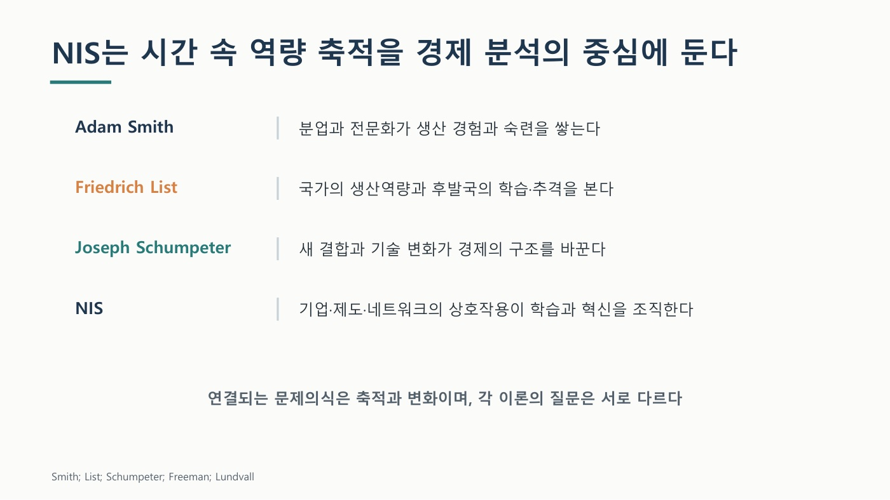
| 이론가 | 질문 | 보충무엇이 축적·변화를 만드나 |
|---|---|---|
| Adam Smith | 분업과 전문화가 생산 경험과 숙련을 쌓는다 | 시장 확대 → 분업 → 숙련 |
| Friedrich List | 국가의 생산역량과 후발국의 학습·추격을 본다 | 국가의 거버넌스·지원 |
| Joseph Schumpeter | 새 결합과 기술 변화가 경제의 구조를 바꾼다 | 기업가의 창조적 파괴 |
| NIS | 기업·제도·네트워크의 상호작용이 학습과 혁신을 조직한다 | 관계 속 학습 |
"연결되는 문제의식은 축적과 변화이며, 각 이론의 질문은 서로 다르다."
1) 교수님의 설명
- Smith: 분업과 전문화가 생산 경험과 숙련을 쌓는다. 시장에서 주고받으며 전체 부가 커진다.
- List: 국가가 생산 역량과 후발국의 학습·추격을 거버넌스하고 지원할 수 있다.
- Schumpeter: 새 결합과 기술 변화가 경제 구조를 바꾼다. 창조적 파괴, 치고 나가는 기업가.
- 연결되는 문제의식은 축적과 변화.
2) 단서 — Schumpeter의 기업가 앞에는 커먼스가 있다 시험 포인트
- W03에서 말했듯 Schumpeter의 기업가 앞에는 커먼스(Potts)가 있다.
보충시험 포인트교수님이 이 계보에 꼭 붙이는 단서다. W03/15 새로운 혁신관 3단계로 보면:
| Phase 0 (Potts 혁신 공유지) | 아직 가격도 없는 단계, 모여서 얘기하며 발견한다. |
|---|---|
| Phase 1 (Hayek) | 시장 경쟁으로 발견을 검증한다. |
| Phase 2 (Smith) | 분업으로 규모를 키운다. |
슬라이드의 계보에는 Phase 0이 없다. Schumpeter의 영웅적 기업가가 혼자 "새 결합"을 해내는 것처럼 보이지만, 교수님은 그 앞에 집단적 발견의 장(커먼스)이 있다고 본다. W05-1/13 공급자 중심성 비판에서 "Schumpeter의 초인적 기업가 개념이 남아 있다"고 한 것도 같은 맥락이다.
수업에서 나온 논점
- Q3 토론에서 Smith를 한국 성장에 적용: "아담 스미스의 좋은 버전을 우리는 한 거예요. 스미스가 마켓 사이즈에 따라서 생산성이 결정된다고 했잖아요."(, 수업노트 §1)
- NIS의 결론 정리에서도 Smith·Hayek와의 연속성을 강조: "그건 Smith나 Hayek와 별로 다르지 않습니다. 시장만 얘기했을 뿐이지, 제도와 구조 속에서 벌어지고 있다는 얘기를."(, §7-5)
보충 사례 보충
- 보충Smith의 핀 공장: 한 사람이 혼자 하루 핀 1개도 못 만들던 것이 18단계로 나누자 10명이 하루 48,000개를 만들었다(W03/10). '축적'의 고전적 예.
- 보충Schumpeter의 새 결합 다섯 가지: 새 제품, 새 생산 방법, 새 시장, 새 원료 공급원, 새 조직. '변화'의 고전적 정의.
수업 프레임에서의 위치
- NIS를 경제사상의 흐름 속에 놓는 슬라이드. 바로 다음 장(p16)이 이 계보를 동태적 효율성이라는 개념으로 묶는다 → W06/09.
- W03(Smith–Hayek–Potts)과 W06(Smith–List–Schumpeter–NIS)은 두 개의 다른 계보다. W03은 "발견은 어떻게 일어나나", W06은 "역량은 어떻게 쌓이나"를 묻는다.
출처 · 태그
리딩
- Smith (1776)
- List (1841)
- Schumpeter (1934)
수업노트
- 수업노트/W06_강의기록_261010.md §5-2
태그
예상 퀴즈 포인트
- Smith·List·Schumpeter·NIS가 '축적과 변화'에 대해 각각 던진 질문을 비교하라. 비교형
- 비교형: W03의 Smith–Hayek–Potts 계보와 W06의 Smith–List–Schumpeter–NIS 계보는 각각 무엇을 설명하려 하는가? 비교형
- "Schumpeter의 기업가 앞에는 커먼스가 있다"는 교수님의 단서를 설명하라. 서술형
정태적 배분 효율성 vs 동태적 효율성 (그리고 TFP)
Static allocative efficiency vs dynamic efficiency; Spence, Ocampo, TFP
한 줄 정의
배분 효율성은 "지금 가진 기술과 자원을 얼마나 잘 나눠 쓰는가"이고, 동태적 효율성은 "학습과 혁신으로 미래의 역량과 선택지를 얼마나 넓히는가"다. NIS의 이론적 기여는 동태적 효율성을 설명하는 데 있다. TFP는 둘 중 어느 것도 아닌 측정 지표일 뿐이다.
쉽게 말하면 보충
같은 냉장고 재료로 저녁을 만든다.
| 배분 효율성 | 재료를 버리는 것 없이 제일 맛있게 나눠 쓰는 능력. 오늘 저녁의 문제. |
|---|---|
| 동태적 효율성 | 요리를 하면서 실력이 늘어 다음 달엔 같은 재료로 전혀 새로운 요리를 할 수 있게 되는 것. 미래의 문제. |
| TFP | 가계부에서 "재료비랑 요리 시간으로는 설명이 안 되는데 왜 이번 달 음식이 더 맛있었지?" 하고 남는 차액. 실력이 늘어서일 수도, 운 좋게 좋은 재료를 샀을 수도, 그냥 계산을 잘못했을 수도 있다. |
핵심 내용
슬라이드 (W06 p16)
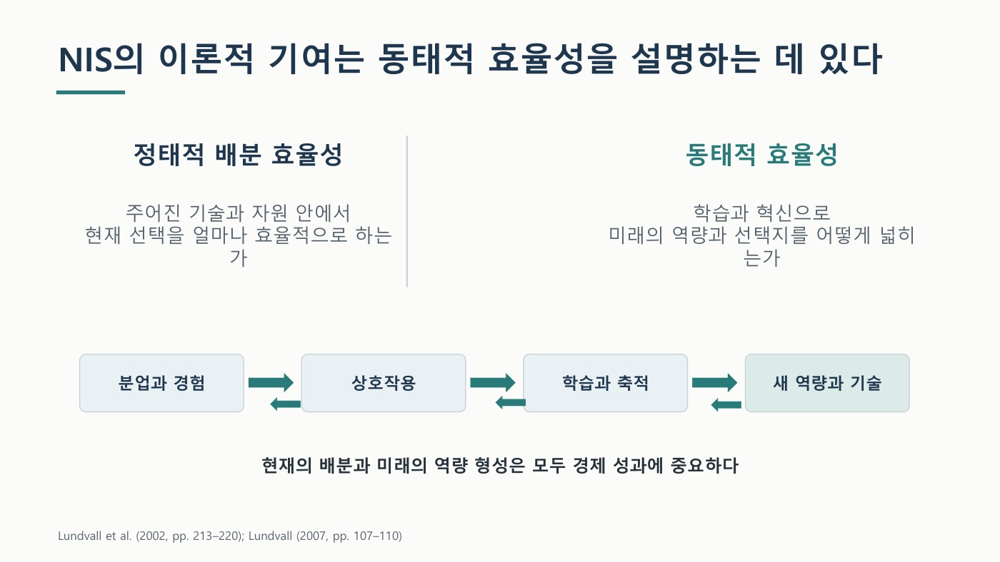
| 정태적 배분 효율성 | 동태적 효율성 | |
|---|---|---|
| 질문 | 주어진 기술과 자원 안에서 현재 선택을 얼마나 효율적으로 하는가 | 학습과 혁신으로 미래의 역량과 선택지를 어떻게 넓히는가 |
경로: 분업과 경험 → 상호작용 학습과 축적 → 새 역량과 기술. "현재의 배분과 미래의 역량 형성은 모두 경제 성과에 중요하다."
1) 등량곡선으로 본 차이 시험 포인트
여러분 아마 이 그래프 보셨을 거예요. 여기는 레이버, 여기는 캐피탈. 기술이라는 게 생산 곡선이죠. 기술이 좋아진다는 건 이 곡선이 이렇게 원점 쪽으로 옮겨 가는 거예요. 그게 주류 경제학에서 설명한 기술의 모습이고, L에 얼마 C에 얼마가 배분 효율성이라면, 동태적 효율성은 (곡선 자체가 옮겨 가는) 부분입니다. 노동력도 학습을 통해서 역량이 늘어나고 기술도 계속 개선되는 거죠.
보충교수님이 말로 설명한 그래프 읽는 법 (사이트에는 보충 다이어그램으로 실림):
- 가로축 노동(L), 세로축 자본(K). 곡선(등량곡선)은 같은 양을 생산할 수 있는 L·K 조합이다.
- 배분 효율성 = 곡선 위에서 가장 싼 조합을 고르는 것. 기술은 그대로.
- 동태적 효율성 = 학습과 혁신으로 곡선 자체가 원점 쪽으로 이동하는 것. 같은 양을 더 적은 투입으로 만들게 된다.
보충시험 포인트주류 경제학은 곡선 이동(기술 변화)을 밖에서 주어지는 것으로 다뤘다. NIS는 바로 그 이동이 어떻게 일어나는지(학습·상호작용·제도)를 설명한다. 그래서 "NIS의 이론적 기여 = 동태적 효율성"이다.
2) 효율성 개념과 생산성 지표의 구분 (W06 p17) 시험 포인트
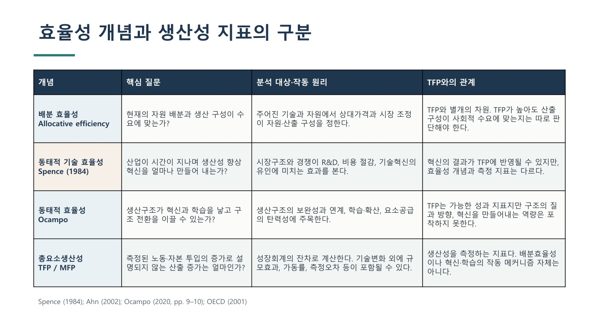
| 개념 | 핵심 질문 | 분석 대상·작동 원리 | TFP와의 관계 |
|---|---|---|---|
| 배분 효율성 | 현재의 자원 배분과 생산 구성이 수요에 맞는가 | 주어진 기술·자원에서 상대가격과 시장 조정이 구성을 정함 | 별개 차원. TFP가 높아도 산출 구성이 사회적 수요에 맞는지는 따로 판단 |
| 동태적 기술 효율성 (Spence 1984) | 산업이 시간이 지나며 혁신을 얼마나 만들어 내는가 | 시장구조와 경쟁이 R&D·비용 절감·혁신 유인에 미치는 효과 | 결과가 TFP에 반영될 수 있지만 개념과 지표는 다름 |
| 동태적 효율성 (Ocampo) | 생산구조 자체가 혁신과 학습을 낳고 구조 전환을 이끌 수 있는가 | 생산구조의 보완성과 연계, 학습·확산, 요소공급의 탄력성 | TFP로는 구조의 질과 방향, 혁신 역량을 포착 못함 |
| 총요소생산성 (TFP/MFP) | 노동·자본 투입 증가로 설명되지 않는 산출 증가는 얼마인가 | 성장회계의 잔차. 기술변화 외에 규모효과·가동률·측정오차도 섞임 | 측정 지표다. 메커니즘 자체가 아님 |
보충시험 포인트퀴즈용 구분 포인트 세 가지:
| Spence vs Ocampo | 둘 다 '동태적'이지만 Spence는 산업 내 경쟁이 혁신을 얼마나 낳나(시장구조), Ocampo는 생산구조 전체가 구조 전환을 이끌 수 있나(경제 전체의 구성)를 본다. Ocampo 쪽이 NIS의 관심에 더 가깝다. |
|---|---|
| TFP ≠ 동태적 효율성 | TFP는 "설명 안 되는 나머지"를 재는 숫자다. 그 안에 학습 효과도 있지만 경기 변동, 측정 오차도 섞여 있다. 숫자가 올랐다고 학습 메커니즘이 작동했다고 단정할 수 없다. |
| TFP와 배분 효율성도 별개 | 생산성이 높아도 사회가 필요로 하는 걸 만드는지는 다른 질문이다. → 이 논리가 W06/11(역량 확대 ≠ 방향 전환)로 이어진다. |
수업에서 나온 논점
- 보충W03/14 경제활동 비용의 3종류와 짝을 이룬다. 신고전파는 생산비용(transformation cost)을 보고 배분 효율성을 따진다. 진화경제학은 발견비용을 보고 동태적 효율성을 따진다. 같은 대립축이다.
- 보충W01/03 '인간에 대한 4가지 이해'의 학습하는 인간 → Dynamic efficiency가 여기서 본편이 된다.
- W08(10/24) Q14 — 경제학의 효율성 외에 다른 차원이 있나 (수업노트 W08 §1 Q14): 경제학은 원래 배분적 효율성만 따졌고, 기술이 시간에 따라 바뀌니 동태적 효율성이 나왔으며, 그것이 시스템 차원으로 확대되었다. 교수님은 "현재로서는 거기까지인 걸로 알고 있다, 경제학 전공자에게 한 번 더 확인해 보라"고 답했다.
보충 사례 보충
- 보충한국 반도체: 1980년대 초 삼성의 메모리 진출은 당시 배분 효율성 기준으로는 비합리적이었다(비교우위 없음, 막대한 손실). 그러나 학습을 통해 생산구조 자체가 바뀌었다. 동태적 효율성으로만 설명되는 선택이다.
- 보충'Solow의 역설': "컴퓨터 시대는 생산성 통계만 빼고 어디서나 보인다"(Solow 1987). 기술 변화가 TFP 같은 지표에 바로 잡히지 않는다는 유명한 말. TFP가 측정 지표에 불과하다는 점을 보여 준다.
수업 프레임에서의 위치
출처 · 태그
리딩
- Lundvall et al. (2002)
- Lundvall (2007)
- Spence (1984)
- Ocampo (2020)
수업노트
- 수업노트/W06_강의기록_261010.md §6
- 수업노트/W08_강의기록_261024.md §1 Q14 — 효율성 개념의 다른 차원
태그
예상 퀴즈 포인트
- 정태적 배분 효율성과 동태적 효율성을 구분하고, NIS의 이론적 기여가 왜 동태적 효율성에 있는지 설명하라. (등량곡선 그림 활용 가능) 서술형
- 배분 효율성·동태적 기술 효율성(Spence)·동태적 효율성(Ocampo)·TFP를 구분하라. 특히 TFP가 "측정 지표일 뿐 메커니즘이 아니다"라는 말의 의미를 쓰라. 서술형
- 비교형: W03의 생산비용 vs 발견비용 구분과 W06의 배분 효율성 vs 동태적 효율성 구분은 어떻게 대응하는가? 비교형
NIS의 한계 ① — 권력정치와 시민의 자리
What NIS under-explains — power politics; citizens as agenda-setters
한 줄 정의
NIS는 정부의 기술·산업정책은 잘 분석하지만 누가 의제를 정하고, 누가 이득과 손해를 보며, 누가 목소리를 내는가라는 권력정치는 덜 설명한다. "잘하는 것만 보고 있는 거예요. 매니저 입장이지." 그래서 시민도 NIS 안에서는 사용·채택·피드백·수요를 하는 존재로만 나온다. 슬라이드는 시민을 문제를 정의하고 방향을 정하는 의제 형성자로 확장하자고 제안한다.
쉽게 말하면 보충
축구팀 분석 보고서가 있다. 패스 성공률, 전술 완성도, 유소년 시스템은 꼼꼼히 분석한다. 그런데 누가 감독을 뽑았는지, 연봉은 누구에게 몰리는지, 벤치 선수와 팬은 어떤 팀을 원하는지는 안 다룬다. 팀이 얼마나 잘하는지는 알려 주지만 누구를 위한 팀인지는 알려 주지 않는다.
핵심 내용
슬라이드 (W06 p18)
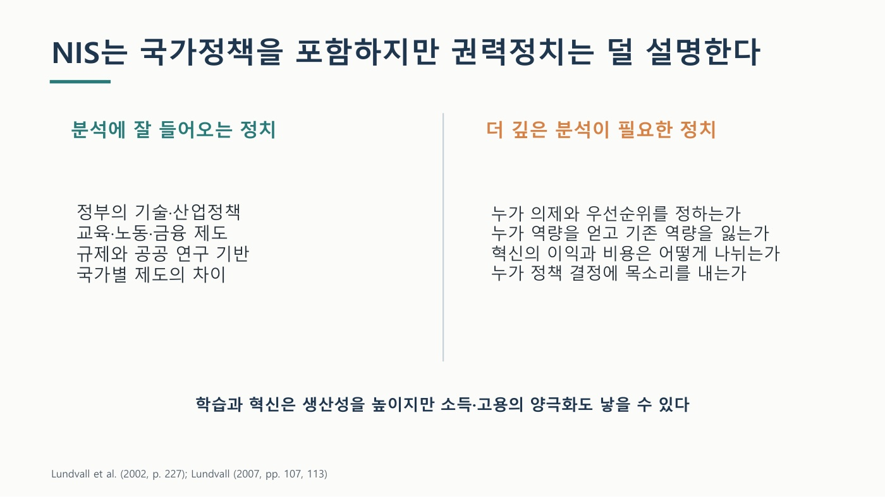
| 분석에 잘 들어오는 정치 | 더 깊은 분석이 필요한 정치 |
|---|---|
| 정부의 기술·산업정책 | 누가 의제와 우선순위를 정하는가 |
| 교육·노동·금융 제도 | 누가 역량을 얻고 기존 역량을 잃는가 |
| 규제와 공공 연구 기반 | 혁신의 이익과 비용은 어떻게 나뉘는가 |
| 국가별 제도의 차이 | 누가 정책 결정에 목소리를 내는가 |
"학습과 혁신은 생산성을 높이지만 소득·고용의 양극화도 낳을 수 있다."
1) 매니저 입장 시험 포인트
NIS는 잘하는 것만 보고 있는 거예요. 이렇게 하면 잘 되지, 성공하지, 쫓아가지. 매니저 입장이지. 따라가는 사람 입장에서는 '저쪽은 아닌데' 하고 반대로 볼 수도 있는 거고, 그런 거는 설명하지 못합니다.
보충시험 포인트왼쪽 열은 모두 "어떻게 하면 역량이 커지나"를 묻는 제도다. 오른쪽 열은 "그 역량이 누구에게 가나"를 묻는다. NIS는 왼쪽의 언어로 만들어진 이론이라 오른쪽 질문이 자연스럽게 빠진다.
2) 시민은 사용자·소비자를 넘어 의제 형성자다 (W06 p19) 시험 포인트
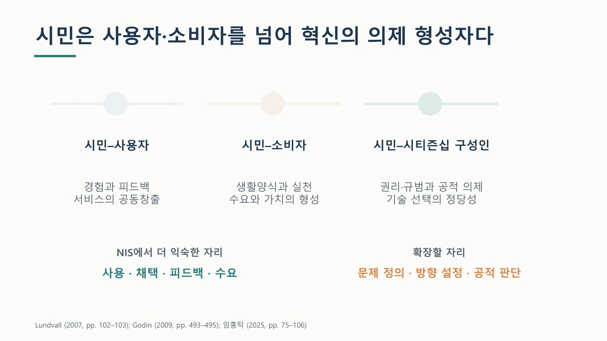
| 시민의 세 얼굴 | 내용 |
|---|---|
| 시민–사용자 | 경험과 피드백, 서비스의 공동창출 |
| 시민–소비자 | 생활양식과 실천, 수요와 가치의 형성 |
| 시민–시티즌십 구성원 | 권리·규범과 공적 의제, 기술 선택의 정당성 |
| NIS에서 더 익숙한 자리 | 확장할 자리 |
|---|---|
| 사용 · 채택 · 피드백 · 수요 | 문제 정의 · 방향 설정 · 공적 판단 |
- NIS에서 시민은 기업을 따라가는 시장 수요자 역할이다.
- Lundvall의 Transformative Innovation Policy(2024) 논의가 이 비판에 대한 응답이다 → W06/12.
보충시험 포인트이 슬라이드의 참고문헌에 임홍탁 (2025) 「혁신주체로서의 시민」이 들어 있다. 교수님 본인의 연구이며 W15 Core Reading이다. 세 번째 얼굴(시티즌십 구성원)이 교수님이 학기 내내 강조하는 지점이다.
3) NIS가 시민을 다루는 방식은 이미 "사용자"였다 보충
보충주의: NIS에 시민이 아예 없는 건 아니다. Lundvall의 사용자–생산자 상호작용에서 사용자는 중요한 학습 파트너다(W02-1/07). p7 도식에도 '사용자·시민'이 있다. 문제는 그 자리가 수요·피드백에 머문다는 것이다. 제품이 나온 뒤에 반응하는 역할이지, 무엇을 만들지를 앞에서 정하는 역할이 아니다.
수업에서 나온 논점
- 보충시험 포인트W05-1/13 공급자 중심성 비판의 NIS판이다. W05에서 교수님은 Mode 2·Triple Helix가 모두 "공급자 입장"이라고 했다. W06에서도 같은 판정을 내린다: NIS는 매니저 입장이고, 7-6절에서는 "NIS나 이런 것들은 지나치게 공급 중심적인 경향"이라고 직접 말한다 → W06/13.
- 보충W05-1/09 세 모델 비교에서 "TH는 시민을 소비자·수혜자로 본다"는 판정과도 같은 구조다.
- 같은 날 Q2 토론: "소버린 AI에서는 시민이 없지. 시민이 없죠."(, 수업노트 §1) — 국가 전략 논의에서 시민이 빠지는 현재 사례.
- W08(10/24) Q3 — 혁신의 성공은 어떤 기준으로 평가해야 하나 (수업노트 W08 §1 Q3). NIS는 원래 유럽 연구자들이 일본의 성공을 설명하려고 만든 틀로, 국가 안에서 기업 경쟁력을 강화하는 네트워크와 제도를 종합한 것이다. 그래서 NIS가 신자유주의적이라는 비판도 있다(시장주의자보다는 훨씬 시스템을 생각하지만).
- 일본의 종신고용을 중요하게 본 이유는 역량 축적 때문이었는데, 신자유주의로 가며 노동 유연화가 진행됐다. 52시간제 같은 문제가 바로 걸린다 — "혁신을 위해 노동 환경은 등한시해도 되는가."
과연 혁신을 위해서 노동 환경 이런 거는 등한시해도 되느냐. 이거는 숙제예요. NIS가 풀어주는 건 아니고 이거는 저희가 풀어야 되는 겁니다.
암묵지가 굉장히 중요한 산업은, 노동자가 자기가 언제 잘릴지 모르는 상황에서는 그걸 누가 고민하겠어요? 딴 생각만 하지. 근데 '야 우리 같이 가자' 이런 식으로 되면 열심히 하지, 경쟁력을 올릴 수 있는 것이고.
- 보충시험 포인트위 슬라이드의 "누가 역량을 얻고 잃나, 이익과 비용은 어떻게 나뉘나"를 노동 문제로 구체화한 답이다. 산업 성격(암묵지 중심 vs 벤처)에 따라 답이 다르다는 단서는 SIS(W07-2/04)와 이어진다.
보충 사례 보충
- 보충자동화와 일자리 양극화: 학습과 혁신으로 생산성은 오르지만 중간 숙련 일자리가 줄고 고숙련·저숙련으로 갈라지는 현상(Autor 등의 job polarisation 연구). p18 마지막 문장의 실제 모습이다.
- 보충시민이 의제를 정한 사례: 영국 NHS의 환자·시민 참여 우선순위 설정(James Lind Alliance)은 어떤 연구를 먼저 할지를 환자·간병인·의료진이 함께 정한다. '확장할 자리(문제 정의)'의 실제 예다.
수업 프레임에서의 위치
- W01의 세 번째 문제의식 공공가치와 Civic Actor / Citizenship(W01/07·08)이 NIS 비판의 기준으로 쓰인다.
- W03/16(Smith·Hayek·Potts에서 시민의 자리), W05-1/09(Mode1·Mode2·TH에서 시민의 자리)에 이어 NIS에서 시민의 자리를 묻는 세 번째 비교다.
출처 · 태그
리딩
- Lundvall et al. (2002)
- Lundvall (2007)
- Godin (2009)
- 임홍탁 (2025)
수업노트
- 수업노트/W06_강의기록_261010.md §7-1, §7-2
- 수업노트/W08_강의기록_261024.md §1 Q3 — 혁신의 성공 기준, 종신고용과 52시간제
태그
예상 퀴즈 포인트
- NIS가 "잘 설명하는 정치"와 "덜 설명하는 정치"를 구분하고, 교수님이 NIS를 "매니저 입장"이라고 평가한 이유를 쓰라. 서술형
- NIS에서 시민은 어떤 자리에 있으며, 슬라이드가 제안하는 '확장할 자리'는 무엇인가? 시민의 세 얼굴(사용자·소비자·시티즌십 구성원)을 들어 설명하라. 서술형
- 비교형: W05의 공급자 중심성 비판과 W06의 NIS 한계 비판은 어떻게 같은 구조인가? 비교형
- 비교형: Smith·Hayek·Potts / Mode1·Mode2·TH / NIS에서 시민의 역할은 각각 어떻게 다른가? 비교형
NIS의 한계 ② — 역량 확대가 방향 전환을 보장하지 않는다
Capability expansion does not guarantee directional change
한 줄 정의
NIS는 혁신 역량을 어떻게 키우는가는 잘 설명하지만, 그 역량이 어느 방향으로 쓰일지는 보장하지 않는다. 역량이 커져서 방향도 저절로 바뀐다면 "기후 온난화가 벌어지면 안 된다." 이제는 "계속 전진 맞아?"를 물어야 할 때다.
쉽게 말하면 보충
자동차 엔진 성능을 계속 높이는 것과 어디로 갈지 정하는 것은 다른 문제다. NIS는 엔진(역량)을 키우는 법은 잘 알려 준다. 그런데 엔진이 좋아졌다고 차가 저절로 올바른 목적지로 가지는 않는다. 오히려 더 빨리 잘못된 방향으로 갈 수도 있다.
핵심 내용
슬라이드 (W06 p20)
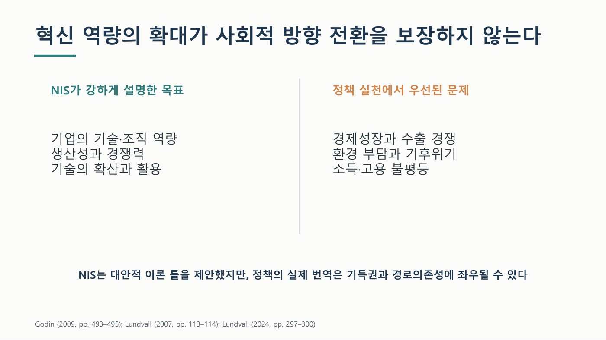
| NIS가 강하게 설명한 목표 | 정책 실천에서 우선된 문제 |
|---|---|
| 기업의 기술·조직 역량 | 경제성장과 수출 경쟁 |
| 생산성과 경쟁력 | 환경 부담과 기후위기 |
| 기술의 확산과 활용 | 소득·고용 불평등 |
"NIS는 대안적 이론 틀을 제안했지만, 정책의 실제 번역은 기득권과 경로의존성에 좌우될 수 있다."
1) 역량이 방향을 정한다면 기후위기는 없어야 시험 포인트
- 역량이 커졌다고 방향이 바뀌는 건 아니다. 그랬다면 기후 온난화가 벌어지면 안 된다.
- 그린 케인지어니즘, W02의 frugal vs responsible innovation을 다시 언급했다.
- 중국은 태양광에 엄청나게 투자하면서 쓰레기도 엄청나게 만든다. 그게 과연 성장이라고 할 수 있느냐.
2) "계속 전진 맞아?" 시험 포인트
NIS나 우리 기술경영 쪽도 보면 기본적인 취지는 일단 잘 먹고 잘 살자는 거. 끝없는 전진이죠. 근데 '잠깐, 계속 전진 맞아? 다시 전진 맞아?'라는 질문을 할 때가 된 거예요.
AI 논쟁도 다 그렇습니다. AI가 가져다주는 편안함 여러 가지 있지만, 그래서 일자리를 다 잃어버리고, 정말 그걸 원해? 그런 라이프스타일을 원해?라는 질문을 이제 하는 거죠.
- 현재 사례: 한 대기업 회장이 광주에 "무슨 일이 있어도 여기 짓는다"고 한 대형 시설(※녹취상 AI 데이터센터로 추정)을 두고 전력·용수 문제로 환경단체 반발이 커졌다.
- 이는 정치 진영의 문제가 아니라 "얼마나 갈 것인가"를 물을 때가 됐다는 뜻이다.
3) NIS가 이것을 다루지 않은 이유 — 공정한 단서
- NIS가 이를 깊이 다루지 않은 것은 당시 가난 탈출이 지상 목표였기 때문이다.
- 쉽지 않지만 과제가 있다는 것을 부정할 수는 없고, 적어도 그 질문은 하고 가야 한다.
보충시험 포인트교수님의 비판은 "NIS가 틀렸다"가 아니다. NIS가 만들어진 시대의 질문(어떻게 따라잡나)과 지금의 질문(어디로 가야 하나)이 달라졌다는 것이다. W06/09의 동태적 효율성은 "선택지를 넓히는 능력"인데, 넓어진 선택지 중 무엇을 고를지는 그 개념 밖에 있다.
수업에서 나온 논점
- 수업노트 토론 질문 후보: "혁신 역량 확대와 방향 전환 — '계속 전진 맞아?'를 기술경영 관점에서 어떻게 다룰 것인가."
- 보충W05-2/07 기술 수용 기준의 전환(경제적 타당성 → 사회적 타당성)과 같은 주장이다. 역량(할 수 있느냐)과 수용(해야 하느냐)은 다른 질문이다.
- 보충W01/06 시장 실패 · 시스템 실패 · 전환 실패에서 세 번째(전환 실패)가 바로 이 문제다. 역량이 있어도 방향을 못 바꾸는 실패.
- Q4 토론(같은 날)에서 "공적 정당화는 비용 아니냐"는 질문에 교수님은 "이거는 정치적인 문제입니다. 정답이 있는 문제가 아닙니다"라고 답했다(, 수업노트 §1). 방향 설정은 기술적 최적화가 아니라 정치적 결정이라는 같은 입장이다.
- W08(10/24) Q5 — AI 속도를 국가가 규제하면 NIS가 오히려 혁신을 저해하지 않나 (수업노트 W08 §1 Q5). 교수님이 놀라워한 것은 미국에서 브레이크 얘기가 나오기 시작했다는 것. 원자력의 선례(Atoms for Peace)처럼, 이번엔 통제하자는 얘기를 회사(Anthropic의 Dario Amodei)가 먼저 했다 — 통제를 말하면서 진도도 계속 나가고 있다.
미국이라는 나라는 원래 프론티어리즘입니다. 서부로 계속 전진, 전진, 전진. 이제 우주로 나가잖아요. 그런 나라에서 잠깐 브레이크를 잡는 얘기들이 나오기 시작했다는 게 놀랍기는 해요.
- 보충위 본문의 "계속 전진 맞아?"가 실제로 미국에서 제기되기 시작했다는 관찰. W07-1/05 Frame 1.0의 '끝없는 프론티어' 상상력과 대비된다.
보충 사례 보충
- 보충제번스 역설·반등 효과: 연료 효율이 좋아지면 오히려 총 사용량이 늘 수 있다(W01/05 사용자 고착의 rebound effect). 역량(효율) 향상이 방향(감축)을 보장하지 않는 대표 사례.
- 보충Mission-oriented innovation policy (Mazzucato): "방향성(directionality)"을 정책의 중심에 두자는 흐름. 이 수업 후반부 MOIP 주제로 이어진다.
수업 프레임에서의 위치
- W01/10 강의 지도의 "구조의 차이"(NIS) → "구조의 변화"(TIS·StS·Transition)로 넘어가는 이유를 보여 주는 슬라이드다. NIS는 차이를 설명하지만, 방향 전환은 다음 이론들의 몫이다.
출처 · 태그
리딩
- Godin (2009)
- Lundvall (2007)
- Lundvall (2024)
수업노트
- 수업노트/W06_강의기록_261010.md §7-3
- 수업노트/W08_강의기록_261024.md §1 Q5 — AI 발전 속도를 국가가 규제해야 하나
태그
예상 퀴즈 포인트
- "혁신 역량의 확대가 사회적 방향 전환을 보장하지 않는다"는 주장을 설명하고, 수업에서 든 근거(기후위기, 중국 태양광, AI 논쟁)를 들어 논하라. 서술형
- NIS가 방향 전환 문제를 깊이 다루지 않은 이유에 대한 교수님의 설명은 무엇인가? 서술형
- 비교형: W06의 '역량 vs 방향' 문제와 W01/06의 '전환 실패'는 어떻게 연결되는가? 비교형
Lundvall의 응답 — 대체가 아니라 결합 (TIP)
Lundvall's response — combining frames for Transformative Innovation Policy
한 줄 정의
NIS가 성장주의라는 비판에 대해 Lundvall(2024)은 NIS를 버리지 말고 다른 프레임과 결합하자고 답한다. 성장·과학기술 프레임 + NIS 프레임 + TIP·STS 프레임을 함께 써서 기후변화와 불평등에 대응하자는 것. 평가: 이론적 응답은 강하지만, 실제로 어떻게 할지는 여전히 숙제다.
쉽게 말하면 보충
엔진(NIS 역량)이 좋은 차가 엉뚱한 데로 간다는 비판을 받았다. Lundvall의 대답은 "엔진을 버리자는 게 아니라, 내비게이션(방향 설정)과 운전 연수(실험·학습)를 추가하자"다. 문제는 누가 목적지를 입력하느냐가 여전히 정해지지 않았다는 것이다.
핵심 내용
슬라이드 (W06 p21) — 세 프레임의 결합
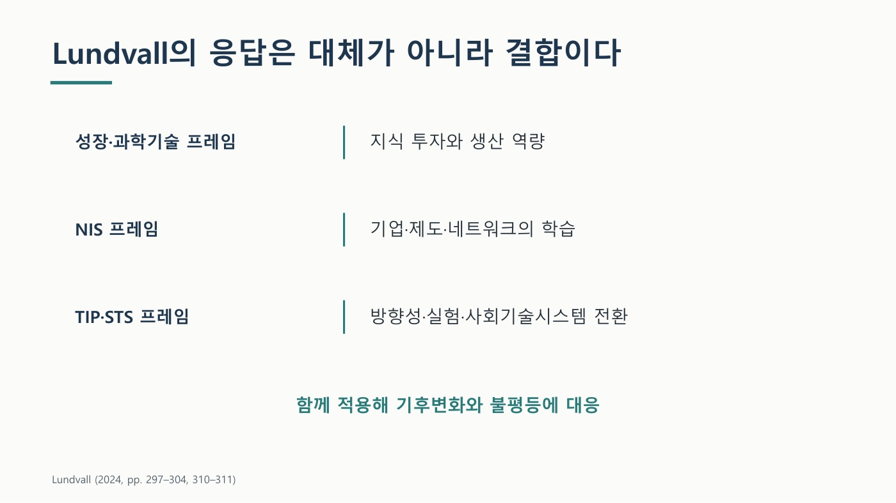
| 프레임 | 초점 |
|---|---|
| 성장·과학기술 프레임 | 지식 투자와 생산 역량 |
| NIS 프레임 | 기업·제도·네트워크의 학습 |
| TIP·STS 프레임 | 방향성·실험·사회기술시스템 전환 |
→ "함께 적용해 기후변화와 불평등에 대응"
- Freeman은 작고했고 Lundvall은 여전히 활동 중이라 이런 비판에 직접 응답한다. 그는 시장주의자라기보다 사회 구조적 관점을 가진 사람이라 자기 프레임을 어디에 쓸 것인가를 계속 고민해 왔다.
보충시험 포인트이 세 프레임은 W01 R1 리딩(Schot & Steinmueller 2018)의 혁신정책 세 프레임(Frame 1 R&D / Frame 2 NIS / Frame 3 Transformative change)과 거의 같은 구조다. Lundvall은 "3이 1·2를 대체한다"가 아니라 "셋을 겹쳐 쓰자"는 입장이다. W07에서 이 세 프레임을 직접 강의했다 → W07-1/04 혁신정책의 세 프레임
슬라이드 (W06 p22) — 변혁에 필요한 네 가지
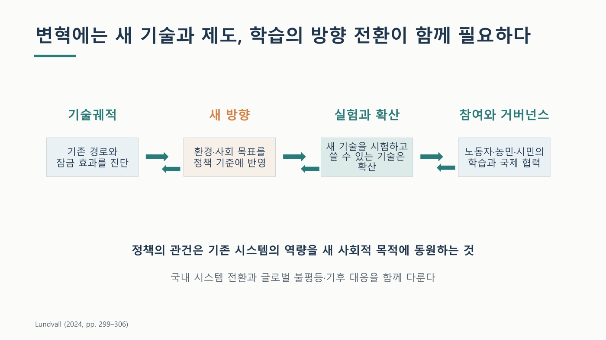
- 기술궤적 — 기존 경로와 잠금(lock-in) 효과를 진단
- 새 방향 — 환경·사회 목표를 정책 기준에 반영
- 실험과 확산 — 새 기술을 시험하고, 쓸 수 있는 기술은 확산
- 참여와 거버넌스 — 노동자·농민·시민의 학습과 국제 협력
"정책의 관건은 기존 시스템의 역량을 새 사회적 목적에 동원하는 것."
- 관련 개념: 디커플링(성장은 하되 CO₂는 덜), 도넛 경제(바깥은 생태적 한계, 안쪽은 사회적 기본권, 그 사이에서만 경제 활동).
그럼에도 불구하고 사람들은 계속 프로그레스하는 걸 원한단 말이에요. 그렇다고 '나는 자연인이다' 따라 할 수는 없잖아요. 그 접점을 찾아야 되는데 아직 다들 못 잡고 있는 거예요. 유럽은 '스톱' 하는 전투를 너무 세게 한 거고, 미국은 '그냥 가, 계속 가', 우리도 막 가는 거였고, 중국은 더 가는 거였고. 그래서 유럽이 뒤처졌다는 얘기가 나오고, 극우가 '쟤네들 다 나가는데 우리는 뭐야' 하는 거지.
보충W03/08에서 교수님이 CTA를 평가하며 "유럽은 그러는 사이 미중에 밀렸다"고 한 것과 같은 판단이다. 방향을 묻는 것 자체는 옳지만, 성장과의 접점을 못 찾으면 정치적 반발을 부른다.
슬라이드 (W06 p23) — 평가: 이론은 강하지만 실천은 남는다 시험 포인트
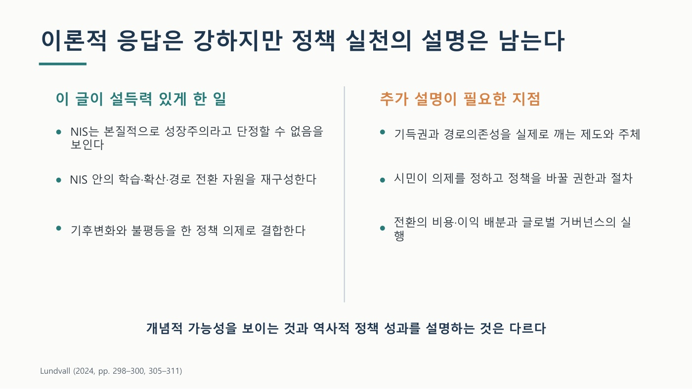
| 설득력 있게 한 일 | 추가 설명이 필요한 지점 |
|---|---|
| NIS는 본질적으로 성장주의라고 단정할 수 없음을 보인다 | 기득권과 경로의존성을 실제로 깨는 제도와 주체 |
| NIS 안의 학습·확산·경로 전환 자원을 재구성한다 | 시민이 의제를 정하고 정책을 바꿀 권한과 절차 |
| 기후변화와 불평등을 한 정책 의제로 결합한다 | 전환의 비용·이익 배분과 글로벌 거버넌스의 실행 |
"개념적 가능성을 보이는 것과 역사적 정책 성과를 설명하는 것은 다르다."
말은 좋은데 실제로 어떻게 해야 될지에 대한 얘기들은 여러분 숙제로 남아 있습니다. NIS는 본질적으로 성장주의라고 단정할 수 없음을 봅니다. 가치가 어디서 발생하는지를 찾아낸 거예요. 그리고 그 플로우가 잘 흘러야 된다는 얘기를 하고.
- 글로벌 거버넌스 논의에 대해: 유럽 학자들은 세계를 경험해 봤기 때문에 글로벌 거버넌스가 빠지지 않고 나오지만, 실제로 쉽지 않다.
보충시험 포인트오른쪽 열 두 번째 줄("시민이 의제를 정할 권한과 절차")이 W06/10의 비판과 정확히 겹친다. Lundvall의 응답이 시민의 자리 문제는 풀지 못했다는 것이 슬라이드의 판정이다.
수업에서 나온 논점
- 보충Lundvall의 응답 구조는 W05-1/11·12의 Shinn 비판과 대비해 보면 좋다. Shinn은 Mode 2·TH를 바깥에서 비판했고, Lundvall은 NIS를 안에서 확장했다. 교수님은 둘 다 공급자 쪽 논의라고 볼 것이다 → W06/13.
- W08(10/24) Q9 — NIS는 ESG까지 다뤄야 하지 않나 (수업노트 W08 §1 Q9): 기업들이 ESG·CSR·CSV로 노력하지만 ESG의 가장 큰 약점은 서류상으로만 돈다는 것 — 리포트를 투자자가 보고 OK 하는 구조이고, 현장을 로버스트하게 측정하기 어렵다. 현장 사람들이 하드 에비던스를 갖고 있으니 무엇이 바뀌어야 하는지 현장에서 말해 줘야 한다. 기후변화에서는 감축(mitigation)보다 적응(adaptation)이 더 현실적일 수 있다.
- 보충위 슬라이드의 남은 과제("개념적 가능성 ≠ 정책 성과")의 기업판이다. ESG도 보고서상의 가능성과 현장의 변화가 다르다.
보충 사례 보충
- 보충도넛 경제(Raworth 2017): 안쪽 원은 식량·주거·교육 같은 사회적 기초, 바깥 원은 기후·생물다양성 같은 생태적 한계. 경제는 그 사이 도넛 모양 공간에 있어야 한다는 모델. 암스테르담시가 2020년 도시 전략에 채택했다.
- 보충디커플링 논쟁: 유럽 여러 나라는 GDP가 늘면서 국내 배출량은 줄었다(상대적·절대적 디커플링). 다만 수입품에 담긴 배출까지 따지면 효과가 작아진다는 반론이 있다.
수업 프레임에서의 위치
- NIS(구조의 차이)에서 TIS·StS·Transition(구조의 변화)으로 넘어가는 다리. Lundvall 스스로 "TIP·STS 프레임"을 끌어들인다는 것 자체가 다음 이론들의 필요성을 보여 준다.
- W01 Core Reading Lundvall (2024) Transformative innovation policy(R3)의 본편이다.
출처 · 태그
리딩
- Lundvall (2024)
수업노트
- 수업노트/W06_강의기록_261010.md §7-4, §7-5
- 수업노트/W08_강의기록_261024.md §1 Q9 — NIS는 ESG까지 다뤄야 하나
태그
예상 퀴즈 포인트
- NIS가 성장주의라는 비판에 대한 Lundvall(2024)의 응답을 '대체가 아니라 결합'이라는 표현을 중심으로 설명하라. 서술형
- Lundvall의 응답이 설득력 있게 한 일과 여전히 남은 과제를 각각 쓰라. 특히 "개념적 가능성을 보이는 것과 정책 성과를 설명하는 것은 다르다"의 의미를 설명하라. 서술형
- 변혁에 필요한 네 요소(기술궤적·새 방향·실험과 확산·참여와 거버넌스)를 쓰라. 서술형
확장된 분석틀과 교수님의 통합 반대
Extended framework (civil-society agenda × NIS capability) — and the professor's case for keeping them separate
한 줄 정의
슬라이드는 시민사회의 의제(문제·필요·위험)와 NIS의 역량(기업·연구·노동·학습)을 권력관계·분배 정책으로 연결하는 종합 도식을 제시한다. 그런데 교수님은 이 이론적 통합에 반대한다. NIS는 지나치게 공급 중심적이라, 시민 인식론 쪽은 따로 만들고 나중에 만나는 게 낫다는 것이다. 단 "실제는 같이 가겠죠."
쉽게 말하면 보충
공장 생산관리 매뉴얼(NIS)에 "고객 목소리" 장을 한 챕터 끼워 넣을 수는 있다. 하지만 그렇게 하면 고객의 목소리가 공장의 언어(효율·품질 지표)로 번역되어 버린다. 교수님의 생각은 고객 쪽 이론은 고객의 언어로 따로 쓰고, 실제 현장에서는 둘이 만나 협의하면 된다는 것이다.
핵심 내용
슬라이드 (W06 p24)
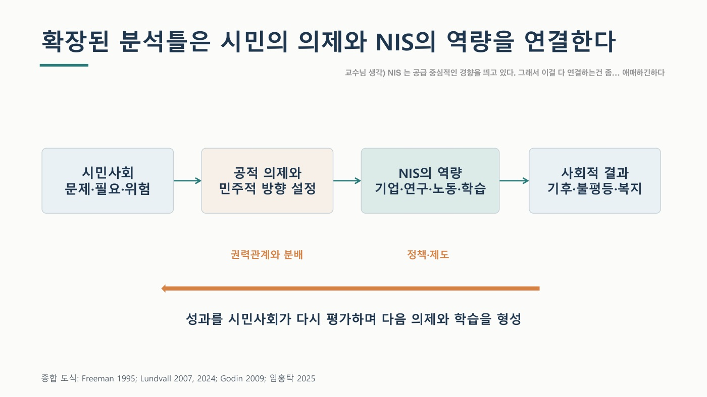
흐름: 시민사회(문제·필요·위험) → 공적 의제와 민주적 방향 설정 → NIS의 역량(기업·연구·노동·학습) → 사회적 결과(기후·불평등·복지). 이 사이를 권력관계와 분배 정책·제도가 매개한다. "성과를 시민사회가 다시 평가하며 다음 의제와 학습을 형성."
종합 도식 출처: Freeman 1995; Lundvall 2007, 2024; Godin 2009; 임홍탁 2025.
보충W06/10(시민은 의제 형성자)과 W06/12(남은 과제: 시민이 의제를 정할 권한과 절차)를 한 장의 그림으로 이은 것이다.
1) 그러나 교수님은 이 연결에 반대한다 시험 포인트
저는 개인적으로는 이 연결을 별로 바람직하다고 생각하지 않았다. 아직까지는. 왜냐면 NIS나 이런 것들은 지나치게 공급 중심적인 경향을 띠고 있어요. 아예 따로 따로 하는 게 맞아. 시민 인식론 쪽은 따로 얘기해서 따로 만들고 나중에 만나는 게 낫지, 이걸 한꺼번에 엮으려는 거는 저는 아니라고 봅니다.
2) Q7 — "따로 다룬다"는 게 무슨 뜻인가 시험 포인트
수업 말미 한 참석자가 이 대목을 질문했다.
이론적으로 통합하는 시도를 굳이 할 필요는 없을 것 같다는 생각이 드는 거예요. 실제는 같이 가겠죠. 실제 기술 혁신을 할 때는 참여해서 얘기도 하고 다 같이 가야 되는데, 이론적으로 NIS를 가지고 이렇게 하는 것보다는 오히려 복지 쪽, 복지 입장에서는 과학기술을 아직 제대로 얘기 못하고 있거든요. 그냥 자원 배분 수준의 얘기지. 거기서 뭔가 얘기를 만들어내는 게.
보충시험 포인트정리하면 교수님의 입장은 세 겹이다.
| 이론 차원 | NIS에 시민 의제를 끼워 넣지 말 것. 공급 중심 이론에 넣으면 시민이 또 공급자의 언어로 다뤄진다. |
|---|---|
| 실천 차원 | 실제 혁신 현장에서는 함께 간다. 참여와 협의는 필요하다. |
| 대안 | 시민 쪽 이론은 오히려 복지 이론 쪽에서 출발하는 게 낫다. 복지 쪽은 과학기술을 자원 배분 수준으로만 다루고 있어서 빈자리가 있다. |
3) 왜 이것이 W05의 연장선인가 보충
보충W05-1/13에서 교수님은 Mode 2의 아고라조차 "우리가 하는데 와서 얘기하세요"라는 공급자의 자기보호적 해법이라고 비판했다. p24 도식에 대한 반대도 같은 논리다. NIS 도식에 시민을 연결하면 결국 NIS가 주최하는 회의에 시민을 초대하는 꼴이 된다. 그래서 수요 쪽(시민 인식론)은 독립된 이론으로 세워야 한다는 것이다.
수업에서 나온 논점
- 수업노트 토론 질문 후보 1순위: "NIS와 시민 의제를 이론적으로 통합해야 하나, 따로 가야 하나 — 슬라이드 도식과 교수님 개인 입장이 엇갈리는 지점."
- 보충반론 거리(토론용):
- 따로 만든 두 이론이 어디서, 어떻게 만나는지는 누가 설계하나? "나중에 만난다"는 말만으로는 Lundvall이 받은 비판(실천 경로 부재)을 그대로 받을 수 있다.
- 슬라이드의 종합 도식 출처에 교수님 본인의 2025 논문이 들어 있다. 교수님은 도식은 보여 주되 "아직까지는" 동의하지 않는다고 했다. 입장이 열려 있다는 뜻으로 읽을 수 있다.
W08(10/24) 질문 토론에서 이어진 논의 시험 포인트
이 개념은 다음 주(W08) NIS 질문 토론에서 가장 길게 이어졌다(수업노트 W08 §1 Q4·Q7·Q8, 약 25분).
Q4 — 따로 하면 기업·정부가 기술 범위를 먼저 정해 버리지 않나? 교수님이 본인이 고민 중인 구상을 밝혔다: NIS의 축을 기업에서 시민(소비자)으로 바꿔 보는 것.
NIS는 워낙에 기업을 중심으로 형성이 되어 있기 때문에 거기다 시민을 붙이면 얘기가 복잡하게 꼬여버려요. 제가 요즘 생각하는 건, 그거를 소비자 중심으로 바꿔볼 수도 있을 것 같아요. 축을.
그 사람이 소비를 하든, 기업을 하든, 노동자가 되든 간에, 자기의 경쟁력과 혁신성과 삶의 코스트를 줄일 수 있도록 — 컴피턴스라는 말도 좀 그렇고 — 그걸 확대 강화시키는 방향으로 어떻게 시스템을 구성할 수 있을까.
기업에다 대고 소비자를 붙이는 방식으로 하지 말고, 아예 시민을 따로 놓고, 그의 역량이 강화될 수 있는 방향으로, 그가 이노베이션할 수 있는 방향으로 내셔널 시스템을 구성해 보는 건 어떨까. 그러면 퍼블릭 섹터 서비스도 들어가고.
- 구체적 그림: 지하철·철도 같은 SOC는 대부분 생산을 위해 만들었다. 이것을 사람을 위해 만든다면 — 노인 버스비 무료, AI 무료 사용 범위 확대, 교육·의료·전력처럼 개인의 역량을 결정하는 인프라. 그러면 국가가 여는 시장, 개인이 여는 시장이 새로 생긴다(노인 버스 무료 → 자율주행 도입).
- 보충시험 포인트위의 "이론은 따로" 입장이 "시민 쪽 시스템을 따로 세운다"는 적극적 구상으로 발전한 것이다. W05-2/07(응급 서비스를 기본권으로), W07-1/07(시골 노인의 자율주행)과 같은 논리.
Q7 (김예나) — 시민사회가 잘못된 방향으로 움직이면? 문화대혁명 사례. 시민 인식론이 잘 작동하는지 판단할 기준 세 가지를 제안: ① 서로 다른 증거와 주장을 자유롭게 검토할 수 있었나 ② 정치적 권위에 반하는 지식도 정당성을 인정받을 수 있었나 ③ 집단적 결정이 잘못됐을 때 오류를 발견하고 수정할 수 있었나.
시민사회가 항상 옳은 얘기를 하는 것도 아니고 항상 그런 건 아닙니다. 그래서 시민 인식론이라는 얘기가 중요한 겁니다.
- 한국의 광우병, 황우석, 후쿠시마 오염수 때 이 세 기준에서 밸런스가 안 맞춰진 부분이 분명히 있었다. 방사성 폐기물 처분장은 10여 년째 부지를 못 찾다가, 처분장이 아니라 실험만 하는 지하연구시설에 태백이 혼자 손을 들었다.
- 해법: W03의 혁신 공유지처럼 정보를 투명하게 공개하고 의견이 다른 전문가들이 다 나와서 이야기하게 하는 것 — NIS를 시민의 입장에서 재구성하는 또 하나의 방법.
시민들이 서로 다른 증거와 주장을 자유롭게 검토할 수 있는 장치를 마련한다는 얘기죠. 지금은 그런 장치가 사실상 따로 없습니다. 비용이 안 들 수는 없지만 거기에 투자를 하는 거죠. 새로운 시대의 내셔널 이노베이션 시스템을 — 내셔널 에피스테믹 시스템이라고 부를지 모르겠다.
폴리틱스가 먼저냐, 지식이 먼저냐. (…) 저도 잘 대답을 못하겠더라고요. 부딪혀 봐야 됩니다. 부딪혀 보는 장치를 만들어야 돼.
집단적 결정이 잘못됐으면 분명히 오류가 나타나겠죠. 그전에 발견하느냐 안 하느냐인데, 그전에 발견을 못해서 우리나라가 식민지를 겪은 거 아니야.
Q8 (김예나) — p24처럼 시민사회와 연결된 확장된 NIS를 실제로 작동시킨 나라가 있나? 개별 국가보다 기후·환경 의제가 NIS로 다시 들어오는 형태로 나타나는데, 결국 태양광·전기차·ESS 산업 경쟁력 이야기로 넘어가고 기후 문제 해결은 딴 데 가 있다.
그게 NIS가 기업으로 중심이 돼 있기 때문에 발생하는 것이죠. 만약에 시민으로 그 포인트를 바꿨다면 다른 얘기를 좀 할 수 있었을 수도 있죠.
- 보충시험 포인트Q8의 답이 이 파일의 결론을 실제 사례로 확인해 준다. 시민 의제를 기업 중심 NIS에 연결하면 의제가 산업 경쟁력으로 번역되어 버린다. 그래서 교수님은 축을 바꾸거나(Q4) 시민 쪽 장치를 따로 만들자고(Q7) 한다.
- 수업노트 W08 토론 질문 후보: "NIS의 축을 기업에서 시민으로 옮기면 무엇이 달라지나"(교수님 본인이 고민 중이라 밝힌 구상). Term paper 후보: 시민 중심 NIS 관점에서 공공 서비스(노인 이동, 돌봄)를 재구성할 때 열리는 시장 분석.
보충 사례 보충
- 보충복지국가와 과학기술: 북유럽 혁신 연구 일부는 복지제도(실업보험·재교육)가 노동자가 기술 변화를 덜 두려워하게 만들어 혁신 수용성을 높인다고 본다. 교수님이 말한 "복지 쪽에서 과학기술 이야기를 만들어 내기"의 한 방향이다. Lundvall(덴마크)의 넓은 환경에 복지체제가 들어간 것도(W06/04) 이 맥락이다.
수업 프레임에서의 위치
- W06의 마지막 결론이자 교수님의 입장 표명. "공급 쪽 이론(NIS) ↔ 수요 쪽 이론(시민 인식론)"을 분리해서 유지하자는 학기 전체 구도를 보여 준다.
- 이 수업 계획표 마지막 회차 "시스템 전환과 시민의 역할: 신시민성"(임홍탁 2025)이 교수님이 말한 "따로 만드는" 시민 쪽 이론의 자리로 보인다(보충추정).
출처 · 태그
리딩
- Freeman (1995)
- Lundvall (2007, 2024)
- Godin (2009)
- 임홍탁 (2025)
수업노트
- 수업노트/W06_강의기록_261010.md §7-6
- 수업노트/W06_강의기록_261010.md §8 Q7
- 수업노트/W08_강의기록_261024.md §1 Q4, Q7, Q8 — 시민 중심 NIS, 시민 인식론 세 기준(김예나), 확장된 NIS의 실제 사례(김예나)
태그
예상 퀴즈 포인트
- p24 확장된 분석틀의 구조를 설명하고, 교수님이 이 이론적 통합에 반대한 이유를 쓰라. 서술형
- "이론적으로는 따로, 실제는 같이"라는 교수님의 입장을 W05의 공급자 중심성 비판과 연결해 설명하라. 서술형
- 비판적 검토: NIS와 시민 의제를 이론적으로 통합하는 것과 분리하는 것의 장단점을 논하라. (토론 질문 후보) 서술형